DISTINCTIO VI — IN DIMENSIONE CORPORUM ET QUINQUE CORPORIBUS¶
Incipit Distinctio VI in Dimensione Corporum et Quinque Corporibus Regularibus
Fons Criticus: boncompagni:1862 (Scritti di Leonardo Pisano, Vol. II, pp. 158–202 · Cod. Urb. Lat. 292, fol. 100r–130v) · English Translation · Summary · GEOMETOR Notes
Incipit Distinctio .VI. in Dimensione Corporum¶
Versio Anglica: Solids & Spheres (pp. 158–189) · Commentarius: Notae ad Stereometriam
Incipit distinctio .VI. in dimensione corporum.
CORPORVM QVIDEM GENERA sunt plura, ex quibus sunt hec: SOLIDI. SERATILIA. PIRAMIDES. COLVMNE. SPERE., et eorum partes, nec non et CORPORA, que multorum basium nuncupantur, et describuntur circa speras: proprie quidem SOLIDVM est, quod latum longum et altum habet; et constat ex sex superficiebus: ut sunt tassilla: scrinea: cisterne et similia.
SERATILE quoque est dimidium solidi constans ex tribus paralillominis, et duobus triangulis; quod habetur, cum superficies secat solidum sex basium super dyametros eius, soluens ipsum in duas portiones equales, quarum unaqueque Seratile, siue cunus nuncupatur.
f. 0166 · p. 159PIRAMIS quidem est figura a base, cuiusque sit forme, ad unum punctum deducta. COLVMNA uero est figura orthogonaliter eleuata super basem circularem terminata in circulo, qui equalis est sue basi; uel est illud quod ambit paralilogramum rectiangulum circa latus unum immobiliter fixum ad idem punctum reductum; que etiam uocatur figura teres: piramis columne est, quam triangulus rectiangulus ambit circa unum ex lateribus, rectum continens angulum immobiliter fixum ad idem punctum reductum. Si ergo latus fixum alteri equum fuerit, piramis rectiangula est: si longius, exigonium est; si breuius, ampligonium nuncupatur, cuius axis est latus fixum: basis uero circulus.
SPERA uero quidem est corpus undique rotundum, quam uulgo pallam dicimus; et est illud quod ambit semicirculus circa dyametrum immobiliter fixum, ad idem punctum reductus, cuius centrum est centrum semicirculi, a quo omnes recte, que egrediuntur ad superficiem spere, sibi inuicem sunt equales. SEMISPERA quidem est, que medietatem spere amplectitur, cuius basis est circulus maior, qui in spera potest circinari, cuius dyameter est dyameter spere, cuius termini poli spere dicuntur.
PORTIO uero spere est, que plus uel minus est semispere, cuius basis est circulus minor circulo semispere. SOLIDA multarum basium sunt multimoda, ex quibus sunt solida .viii. basium, et .xii. basium, et .xx. basium equalium, que EVCLIDES in .xiii.° libro infra speram construere docet. Sunt etiam alie infinite corporum species, quorum mensure habebuntur per ea que super prescripta corpora dicere procurabimus: et ut modus mensurandi corpora perfecte habeatur. Hanc distinctionem in tres partes diuidimus. In prima quarum mensurabimus solida equidistantium laterum, nec non et ea que supra bases suas, cuiusque sint forme, in altum eleuantur, et deficiunt in superficies similes, et equales suis basibus. In secunda quoque mensurabimus piramides, et eorum partes. In tertia quoque uero mensurabimus speras, et eorum partes, nec non et solida multarum basium cadentium infra speras. Et notandum cum dicimus aliquod corpus continere tot ulnas, uel palmos, uel digitos, seu uncias, uel aliquas alias mensuras, tunc intelligimus, illas mensuras esse corporales, seu cubicas; que tribus equalibus dimensionibus, latitudine scilicet, et longitudine, atque altitudine constant. Nam palmus corporalis, siue cubicus est, qui unum palmum in latum, et longum, et altum, et omnes angulos rectos habet: quod idem intellige de ulnis, et alijs mensuris. Et ut ea que dicere uolumus certis probationibus demonstrentur. Quedam que sunt undecimo, et reliquis sequentibus libris EVCLIDIS probata apertissime proponantur, ex quibus sunt hec. Linea recta nequaquam potest esse in plano, et alto. Et cum due linee sese inuicem secant, in una sunt superficie. Et omne trigonum in una superficie est. Et cum due plane superficies sese inuicem secant, comunis eorum sectio est linea recta. Et cum super sectionem duarum rectarum recta aliqua perpendiculariter steterit, toti superficiei orthogonaliter stabit. Et cum steterit linea recta supra comunem sectionem trium linearum cum unaquaque rectum continens angulum, hee tres linee in una superficie sunt linee recte; si eidem superficiei perpendiculares fuerint, equidistantes sunt. Inter duas lineas equidistantes utcumque recta linea continuetur, in earum superficie est. Linearum equidistantium cuicumque superficiei altera perpendiculares fuerit, eidem perpendicularis est. Linee cuiuslibet uni equidistantes, licet non omnes in eadem superficie sunt, et sibi inuicem equidistantes. Linee due continentes angulum, si equidistent lineis
f. 0167 · p. 160duabus alium angulum continentibus; nec ipse in una superficie anguli tantum equales ab uno cuiuscumque superficiei puncto duas eidem superficiei perpendiculares in eandem partem erigi impossibile. Si linee due superficiem continentes duabus lineis aliam superficiem continentibus equidistent; nec ipse linee in una superficie, hee superficies equidistantes sunt. Cum superficies duas superficies equidistantes secat, comunes sectiones earum equidistantes sunt. Lineas duas, si superficies equidistantes secant, proportionaliter secari necesse est. Ex perpendiculari supra quamlibet superficiem stante quecumque superficies educte fuerint, super eandem superficiem orthogonaliter stabunt. Quecumque superficies supra quamlibet superficiem orthogonaliter stantes sese inuicem secant, comunis earum sectio subiecte superficiei perpendicularis est. Angulus solidus, si tres planos contineat, eorumque duo simul accepti maius sunt reliquo. Omnes anguli plani, quos angulos solidus continet, quattuor rectis sunt minores. Si equales linee tres angulos planos continent, quorum quisque duo accepti reliquo sunt maiores, eorum cordis triangulum fieri possibile est. Omnes solidi superficierum equidistantium omnes superficie opposite equales sunt, et equidistantium laterum solidum equidistantium laterum si superficies secet, equidistans duabus eius superficiebus oppositis proportione basium secari necesse est. Solidum equidistantium laterum, si superficies secet per dyametrum duarum eius superficierum oppositarum, per medium secari necesse est. Solida laterum equidistantium supra basem eandem super lineam unam eiusdem altitudinis equalia: solida laterum equidistantium supra basem eandem, nec super lineam unam, dum eiusdem altitudinis sint equalia: solida laterum equidistantium supra bases equales lineis a basibus in altum orthogonaliter, eademque altitudine eductis equalia. Solida laterum equidistantium supra bases equales, nec lineis a basibus orthogonaliter, dumtaxat eadem altitudine erectis equalia. Omnium solidorum laterum equidistantium eiusdem altitudinis, que basis ad basem proportio. Solida laterum equidistantium, si lineis a basibus orthogonaliter erectis pariter et equalia fuerint, erunt bases, et altitudines eorum mutue proportionis. Solida laterum equidistantium quecumque, si equalia fuerint, bases et altitudines eorum mutue proportionis sunt: quod si bases, et altitudines eorum mutue sint proportionis, erunt et ipsa equalia. Inter solida superficierum equidistantium similia proportio solidi ad solidum tripla proportioni laterum eorum adinuicem relatorum. Solida similia dicuntur que angulos habent equales, et circa equales angulos latera proportionalia. A planis duobus angulis equalibus, si linee due in altum erigantur, quarum utraque duas altrinsecus angulorum cum lineis angularibus contineant, equales duobus angulis, quos altera similiter hinc inde cum lineis angularibus continet. Cum a punctis in lineis in altum erectis quacumque designatis descendant perpendiculares due inter superficies linearum angularium, tum et puncta in que perpendiculares incidunt recte linee cum ipsis angulis continent: hee quoque linee cum lineis erectis equales angulos continebunt. Inter solida duorum laterum equidistantium, quorum alterum continent tres linee proportionales: alterum latera equalia, singula medie trium proportionalium, tum et anguli eorum equales fiunt, et ipsa equalia. Si super lineas proportio solida laterum equidistantium similia, eademque informatione construantur, fiunt et ipsa proportionalia: quod si solida laterum equidistantium similia proportionalia fuerint, linee quoque, super quas constructa sunt, proportionaliter esse
f. 0168 · p. 161conuertitur. Si duarum cubi superficierum oppositarum cunctis lateribus per medium diuisis inter puncta diuisionum due describantur superficies, et cubum sese inuicem secantes, comunis eorum sectio dyametron cubi media mediam secat. Si cunei duorum, quorum alterius paralilograma, alterius basi triangule dupla, eque alti fuerint, equales necesse est. Omnium piramidum eiusdem altitudinis, quibus triangule ubi fuerint in piramidis binas equales totis similes ad cuneos binos equales erunt, proportio basis ad basem, que cuneorum unius ad cuneos alterius. Omnium piramidum, quibus bases triangule, si eque alte fuerint, proportio ad inuicem, que basis ad basem. Omnis cuneus diuidi potest in tres piramides equales basium triangularum. Omnium piramidum, quibus bases triangule, si equales fuerint, fiunt bases, et altitudines earum mutue proportionis. Quod si bases, et altitudines earum mutue sint proportionis, ipsas piramides equales esse conuertitur. Omnium piramidum similium basium triangularum adinuicem proportio tripla proportioni laterum adinuicem relatorum. Omnes columne, quibus una basis, uel que super equas bases sunt, est earum proportio sicut axis ad axem. Omnis columna teres equalium terminorum, et spissitudinis piramidi tereti super eandem basim eius altitudinis tripla. Omnis columne, ac piramidis teretis, quibus una basis, idem axis, proportio tripla proportioni, que inter dyametrum basium. Omnis piramis, columneque teretis, quibus una basis, idem axis, si eque alte fuerint piramidi, columneque tereti, quibus una basis, idem axis, erit et piramidum, et columnarum proportio, que basis ad basem. Omnis pirami, et columna teres, quibus una basis, idem axis, si equales fuerint piramidi, columneque tereti, quibus similiter una basis, idem axis, erunt bases, et altitudines earum mutue proportionis. Quod si bases, et altitudines earum mutue sint proportionis, ipsas etiam equales esse conuertitur. Omnium sperarum proportio tripla proportioni dyametrorum. Linea proportione medij et extremorum diuisa, si pars maior directe producatur ad equum dimidij linee diuise, producte linee tetragonus quincuplum est tetragono dimidij linee. Linea in duo diuisa, si totius tetragonus quincuplus fuerit tetragono partis minoris, tum pars maior producatur usque ad duplum partis minoris. Producta linea proportione medij et extremorum diuisa est, cuius pars maior, pars maior linee prioris. Linea proportione medij et extremorum diuisa, si parti minori continuetur dimidium partis maioris, eius linee tretragonus quincuplus est dimidie partis maioris. Linea proportione medij et extremorum diuisa, si producatur ad equum partis maioris, tota quoque linea proportione medij et extremorum diuisa est, cuius pars maior linea prior. Linea proportione medij et extremorum diuisa, linee tetragunus simul cum tetragono partis minoris triplus est tetragono partis maioris. Omni linea rationali proportione medij et extremorum diuisa, pars utraque residuum est. In penthagono equilatero si tres anguli fuerint equales, erunt omnes anguli equales. In circulo describitur triangulus equilaterus, lateris eius tetragonus triplus est tetragono dimidij dyametri. In circulo descripto lateri decagonico intrinsecus continuetur latus exigonicum tota linea proportione medij et extremorum diuisa est, cuius pars maior latus exigonicum. In circulo descripto penthagono equilatero latus penthagonicum potest super latus exigonicum, ac latus decanonicum. In circulo descripto penthagono equilatero duorum eius angulorum corde sese inuicem secent, utraque secari necesse est. Ad idem punctum proportione medij et extremorum maior utriusque pars equalis lateri penthagonico
f. 0169 · p. 162in omni circulo, cuius dyametrum rationali penthagoni equilateri latus inrationale est, cui nomen linea minor. In spera, cuius dyametros longitudine rationalis, si construatur solidum .xx. basium triangulorum equilaterum, latus eius inrationale est, cui nomen linearum minor. In spera, cuius dyametrum potentia rationale, si construatur solidum .xij. basium penthagonorum, latus eius in rationale est, cui nomen est residuum.
Incipiunt theoremata quartidecimi libri.
LATVS exigonicum, si proportione medij et extremorum diuidatur, pars maior est latus decagonicum. In centro circuli deducta perpendicularis alatus penthagonicum equalis est dimidio lateris exagonici, laterisque dacagonici. In circulo tetragonus lateris penthagonici simul cum tetragono corde anguli penthagonici quincuplum est tetragono lateris exagonici. Depositis assummimus demonstrandum, quoniam penthagonum solidum .xij. basium penthagonorum et triangulorum .xx. basium triangularum in eadem spera constructarum; idem circulus continet in circulo descripto penthagono equilatero tringintuplum superficiei contente latere penthagonico ac perpendiculari a centro circuli ad latus penthagonicum deducta, equum est superficiei solidi .xij. basium penthagonorum. Similis demonstrationis est; quoniam si triangulum equilaterum circulus contineat, a cuius centro in latus trianguli perpendicularis descendat, tringintuplum superficiei latere trianguli, et ea perpendiculari contente equum est superficiei solidi .xx. basium triangularum. Depositis assummimus quoniam proportio superficiei solidi .xij. basium penthagonarum ad superficiem solidi xx basium triangularum in eadem spera constructarum, que lateris cubici eiusdem spere ad latus solidi .xx. basium triangularum. De inde assummimus, quoniam proportio lateris cubici ad latus solidi .xx. basium triangularum eiusdem spere, que linee potentis tetragonum totius linee proportione medij et extremorum diuise partem cum tetragono partis maioris ad lineam potentem tetragonum eiusdem linee totius simul cum tetragono partis minoris: per hoc, concluditur, quoniam que proportio lateris cubici ad latus solidi .xx. basium triangularum, ipsa est solidi xij basium penthagonarum ad solidum xx basium triangularum. Quicquid enim decidit cuicumque proportione medij et extremorum diuise idem accidit omni linee similiter diuise. Post has quidem omnes probationes oportet nos scire subscriptas operationes, que in eisdem libris EVCLIDIS dicuntur, uidelicet. Vt a dato puncto in altum a puncto in alto designato supra datam superficiem perpendicularem deducere a dato puncto in designata superficie perpendicularem eidem superficiei in altum erigere. Ex tribus angulis planis quorum quique duo simul accepti maius sunt reliquo, angulum solidum construere: Vnde necesse est, eos tres angulos .iiij.or rectis esse minores. Ad signatum punctum date linee angulum solidum construere equalem signato angulo lineis contento. Supra datam lineam solidum construere simile signato solido superficierum equidistantium. Inter duos circulos, qui sunt ab uno centro, describere superficiem multiangulam minime contingentem minorem circulum. Inter duas speras, que sint ab uno centro, describere solidum plurimarum superficierum maiorem speram contingens minorem speram. Et infra datam speram solidi .iiij.or, et sex., et .viij., et .xij., et .xx. basium construere: nec non et latera ipsarum quinque figurarum infra unam speram insimul collocare: et quedam ex suprascriptis quinque solidis infra quedam eorum aptare: ut in quintodecimo libro fieri docetur.
f. 0170 · p. 163
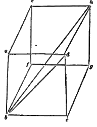

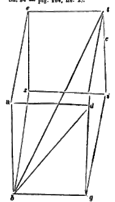
CVM autem aliquod corpus huius prime partis mensurare desideras; embadum basis ipsius, secundum quod superius in tractatu embadorum docui, diligenter inquiras: quod per ipsius corporis altitudinem multiplica, et quod prouenerit, erit embadum ipsius corporis: est enim altitudo corporum huius prime partis linea recta, que orthogonaliter erigitur supra basem, et terminatur in superficiem equidistantem basi. Et ut hec aperte monstrentur, adiaceat primum cubus .aeg. habens palmos .10. in latitudine: longitudine: et altitudine. Cuius sex superficies sunt tetragone, cum habeant angulos rectos, lateraque equalia; et sit basis eius tetragonum .ac., cui equidistans est tetragonum .eg.: cumque aream basis, que est .100., in lineam .ac., que est altitudo cubi, multiplicaueris, .1000. palmos cubicos pro embado ipsius cubi habebis: et si dyametrum ipsius cubi, scilicet lineam .hb. habere uis, quadrata laterum .ba. et .ad. insimul iunge, et habebis .200. pro linea .db.: quibus si addatur tetragonum linee .dh., quod est .100., habebuntur .300. pro quadrato dyametri .bh.: ergo dyameter .bh. est radix trecentorum. Et notandum quod recta .bh. est dyameter spere, in qua cadit cubus .aeg. Et tantum notitiam dyametri .bh. habueris; et per ipsam latera cubi, et embadum eius habere desideras: dyametrum in se multiplica, et eius quod prouenerit tertiam accipe, et habebis tetragonum lateris cubi; quod tetragonum, si per radicem eius multiplicaueris, nimirum embadum ipsius cubi procreabitur. Et si aliquis dixerit: agregaui quadratum dyametri cubi cum quadrato ipsius lateris, et prouenerunt .400.; ponam latus .ab. rem, quam multiplicabo in se, et proueniet census; quem addam cum triplo eius, scilicet cum quadrato dyametri .bh., proueniet .iiij.or census, qui equantur .400. dragmis: diuide ergo .400. per .4., ueniet .100. pro quadrato lateris cubi, quod est .ab.; quare .ab. est 10. Item agregaui quadratum dyametri cum latere ipsius, et prouenerunt .310.: ponam iterum latus .ab. rem, scilicet radicem; quare quadratum dyametri .bh. equatur tribus censibus, hoc triplo quadrati linee .ab.: ergo pro quadrato dyametri cubi, et pro latere ipsius habentur tres census, et una radix, que equantur .310.: redige hoc ad censum unum, scilicet accipe tertiam partem omnium adiacentium, et proueniet census, et tertia radicis, que equantur 1/3 103.: quare dimidianda est illa tertia radicis, et proueniet 1/6; quam in se multiplica, ueniet 1/36; quam adde cum 1/3 103, erunt 13/36 103.; quorum radicem accipe, que est 1/6 10, et extrahe inde sextam pro ea quam multiplicasti, remanebunt .10. pro latere .ab.; cuius quadratum, scilicet .100. triplica, et habebis quadratum dyametri .bh.: et sic secundum hoc possumus consimiles subtilitates in cubis inuenire. Rursus esto solidum, cuius basis sit tetragona habens in uno quoque latere pedes .10.; altitudo quoque ipsius sit plus uel minus laterum basis; multiplicabis similiter embadum basis per eius altitudinem; quam pono esse .12., uenient pedes .1200. pro embado ipsius solidi; cuius dyametrum inuenies esse radicem de .344.: si super duplo quadrati lateris ipsius, scilicet super .200., addideris quadratum altitudinis eius, quod est .144. Et si proponatur, dyametrum solidi equidistantium laterum esse radicem de .344., cuius basis sit tetragona; et eius altitudo excedat latera basis in duobus; et queratur latus ipsius basis, nec non et ipsius solidi embadum, ut in solido .aei., cuius dyameter sit linea .tb.; ponam latus .ab. radicem, et addam quadratum linee .ab. cum quadrato linee .ad., et uenient duo census pro quadrato linee .db.: et signabo punctum .c. in rectam .dt., et sit .ct. duo; remanebit ergo .dc. equalis recte .da.; quare .dc.
f. 0171 · p. 164
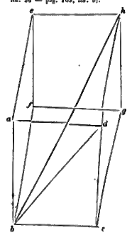
est radix: et quia recta .dt. diuisa est in duo super punctum .c., erunt duo quadrata sectionum .dc. et .ct. cum duplo .tc. in .cd. equalia quadrato linee .td. Nam ex dc in se prouenit census; et ex .ct. in se prouenient .4.; et ex duplo .tc. in .cd. prouenient .iiij.or radices: ergo pro quadrato linee .td. habetur census, et .iiij.or radices, et 4 dragme; quibus additis duobus censibus, scilicet cum quadrato linee .db., uenient tres census, et .iiij.or radices, et 4 dragme pro quadrato dyametri .tb., que equantur .344.: ex quibus si comuniter auferantur 4 dragme, remanebunt tres census, et .iiij.or radices, que equantur .340.: quare si hec redigentur ad censum unum, ueniet census, et radix 1/3 1, que equantur 1/3 113: quare si dimidiauerimus 1/3 1, uenient 2/3; quibus in se multiplicatis, et cum 1/3 113 additis, erunt 7/9 113; de quorum radice, que est 2/3 10, si auferantur 2/3, remanebunt .10. pro latere .ab.; quare altitudo .dt. est .12.; in qua si multiplicabitur tetragonum .ag., quod est .100., uenient .1200. pro embado solidi .aei. Rursus esto basis .ag. tetragona; et altitudo .dt. excedat latus .ab. in duobus; et agregaui quadrata linearum .ba., et .ad., et .dt. cum quadrato dyametri .tb.; et fiunt totum illud quod aggregatum est .688.; quoniam quadratum dyametri .tb. habetur ex agregatione quadratorum linearum .ba., et .ad., et .dt.: si dimidiauerimus .688., uenient .344. pro quadrato dyametri .tb., cum quibus operaberis ut supra. Item agregaui latera .ab., et .bd., et .dt. cum quadrato dyametri .tb., et fuit illud quod aggregatum est .376.: ponam iterum latus .ab. radicem; quare ex aggregato .ab., et .bd., et .dt., uenient tres radices, et duo; quibus additis cum quadrato dyametri .tb., scilicet cum tribus censibus, et .iiij.or, erunt tres census, et septem radices et .6., que equantur .376.: comuniter si auferantur .6., remanebunt tres census, et septem radices equales de .370.: quibus reductis ad censum unum, ueniet census, et radices 1/3 2, que equantur 1/3 123 etc. Possumus quidem in simili solido diuersas huiusmodi ponere questiones, que omnes per hunc modum soluuntur. Item sit solidum equidistantium laterum .aeg. cum lineis a base orthogonaliter erectis, cuius latitudo .ba. sit .10.; et .ad. longitudo sit .11.; et .dh. altitudo sit .12.; et sit orthogonium quadrilaterum .ac.: quare si eius embadum, quod est ex .ba. in .ad., producetur in .dh., habebuntur 1320 pro embado ipsius solidi. Nam quadratum dyametri eius, qui est .hb., habebimus ex aggregatione quadratorum linearum .ba., et .ad., et .dh., quorum summa est 365. Et si in simili modo ponamus dyametrum radicem esse 365.; et longitudinem basis ipsius superhabundare latitudinem eius in uno; et altitudinem eius .dh. superhabundare eandem latitudinem .ab. in .2.; et uolumus inuenire basis, nec non et solidi altitudinem, ponamus .ab. radicem; quare latus .ad. erit radix, uno addito; et .dh. altitudo erit similiter radix, duobus additis; quare ex quadrato linee .ab., hoc ex .ab. in se, prouenit census; et ex .ad. in se prouenit census, et due radices, uno addito; et ex .dh. prouenit census, et .iiij.or radices, et quatuor; et sic habebimus tres census, et sex radices, quinque additis, pro quadrato dyametri .hb., quod est .365.: comuniter si auferantur .5., remanebunt .360., que equantur tribus quadratis, et sex radicibus: quare census, et due radices equantur .120.; quare dimidium radicum multiplicauerimus in se, ueniet unum; quo addito cum .120., erunt .121.; de quorum radice auferatur .1., remanebunt .10. pro .ba.; quare .ad. est .11., et .dh. est 12. Similiter dicatur: addidi quadrata linearum .ab., et .ad., et .dh. cum quadrato dyametri .hb.; et fuit totum illud quod
f. 0172 · p. 165
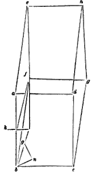
aggregatum est .730.; dimidiabo siquidem ea, et uenient .365. pro quadrato dyametri .hb., cum quibus operandum est ut supra. Sed si dictum fuerit: agregaui altitudinem .dh. cum quadrato dyametri .hb., et habui .377.; et fuit .dh. uno plus ex .da., et .da. uno plus ex .ab.; ponam similiter .ba. rem; quare et .ad. erit res, uno addito, et .dh. erit res, duobus additis; et erunt quadrata earum trium linearum, secundum quod demonstratum est superius, tres census, et sex radices, et 5, que equantur quadrato dyametri .hb.: cui si addatur altitudo .dh., que est radix, duobus additis, erunt tres census, et septem radices: septem additis, que equantur .377.: de quibus comuniter diminutis .7., remanebunt tres census, et septem radices, que equantur .370.; quare census, et radices 1/3 2 equantur 123 et 1/3: deinde procedas ut supra. Sed si unde procedat embadum similium solidorum embadum prouenire ex multiplicatione basis ipsius in eius altitudinem scire uis, considera quod, cum ex altitudine ipsius summatur mensura unius pedis; et per terminum ipsius pedis superficies equidistans basi infra ipsum solidum adsignetur, erunt tunc tot pedes cubici inter basim, et ipsam superficiem, quot pedes superficiales fuerint in embado basis. Similiter si per duplum unius pedis ex altitudine superficiem aliam signauerimus equidistantem basi, erunt utique inter ipsam superficiem, et basem tot pedes cubici, quot in duplo basis sunt pedes superficiales. Similiter ex triplo unius pedis accepta in altum procreatur solidum, in cuius embado erunt tot pedes cubici in ipso solido, quot fuerunt in triplo basis pedes superficiales: ergo quoniam multiplex est altitudo cuiuscumque solidi unius pedis, tam multiplices sunt pedes embadi ipsius solidi ex embado basis. Quare quando multiplicatur embadum basis per altitudinem solidi, habetur utique embadum solidi, ut dictum est. Et quamuis non eleuetur aliquod solidum a lineis orthogonaliter erectis supra basem, tamen solida, que super equas bases, et sub eadem altitudine sunt, sibi inuicem equentur; erit utique illud idem in eo, uidelicet quod ex ducta base in eius altitudinem procreabitur embadum solidi; hoc idem intelligi potest de quoque corpore huius prime partis.
ADIACEAT rursus solidum equidistantium superficierum .dhf., cuius basis .abcd. sit orthogonia, super quam sint erecte recte .ae. bf. cg. dh. minime orthogonaliter stantes, ita ut anguli .abf. et .dcg. sint acuti; quare anguli .eab. et .hdc. sunt otusi; et erunt superficies .af. et .dg. ambo rumbi, uel rumboides: relique uero due superficies .fc. et .ed. erunt aliquando rectiangule, aliquando non: sed qualescumque sint, si altitudinem ipsius solidi inueniremus, et eam per basis embadum multiplicauerimus, ipsius solidi embadum incontanter habebimus. Nam qualiter ipsam altitudinem habere debeamus, breuiter indicabo: a puncto quidem .f. super lineam .ab. cathetum protraham .fi.; linea uero .fi. aut est cathetus super superficiem .ac., aut non. Nam si cathetus est, erit altitudo ipsius corporis ipsa linea .if.: si uero cathetus non est linea .if., protraham per punctum .i. rectam .ko. ad rectos angulos super rectam .ab.; super quam protraham cathetum a puncto .f., et habebo altitudinem ipsius corporis; uel aliter, secundum uulgarem modum, eiciam a puncto .f. super planum .ac. plumbum cum filo cadere faciam; et sic inueniam cathetum eius, si a puncto .f. ceciderit super latus .ab., uel extra. Nam si infra corpus ceciderit super basem .ac., et corpus densatum fuerit, ita ut non possit plumbum orthogonaliter cadere a puncto .f. infra basem .ac., faciam ipsum cadere a puncto .h., uel etiam a puncto .e., ut cadat extra figuram. Sed si
f. 0173 · p. 166
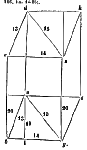

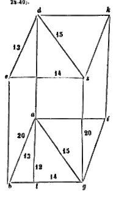
secundum artem operari uolumus, oportebit nos uti arundinum instrumento: sic erigam arundinem orthogonaliter a puncto .b. supra basem .ac., que sit .bm., cuius longitudo sit nota; et aptabo super eam arundinem .mn. faciens angulum rectum, qui ad .m.; et ponamus rectam .of. cathetum esse solidi .dhf.; et erit proportio .bm. ad .of., sicut .bn. ad .bf.: ergo si nota erit longitudo recte .bf., et habebitur similiter et cathetum .fo. notum; que etiam omnia ostendamus cum numeris: esto latus .ab. 18; latus quoque .bc. 12; unum quodque laterum .ae. bf. cg. dh. sit 20; et uolumus inuenire cathetum .fo.: sit quidem arundo .bm. .4., et arundo .mn. .3.; quare .bn. erit .5.; et copulabo rectam .bo., et erit triangulus .fob. similis triangulo .bmn.; quare erit sicut .fb. ad .bn., ita .fo. ad .mb., quadrupla est .fb. ex .bn.; quadrupla ergo erit .fo. ex .mn.; quare .fo. erit .16.; ex ductu .ab. in .bc. proueniunt 216; quibus ductis in .fo., scilicet in .16., ueniunt 3456 pro embado solidi .dhf.
ET si SERATILE aliquod, quod secundum quosdam cunus appellatur, metiri uolumus, basem, que trigona est, in eius altitudinem ducemus, secundum quod fit in solidis sex basium: ad cuius rei euidentiam esto cunus .abgdez., cuius basis esto trigonum .abg.; et sint linee .ad. bc. gz. equales sibi inuicem, et orthogonaliter erecte supra trigonum .abg.; quare trigonum .dez. trigono .abg. equale, et equidistans est; recta quidem .de. recte .ab. et .dz. ei que est .ag. et .ez. equalis est recte .bg.: paralilogramina ergo sunt quadrilatera .ae., et .eg., et .gd. Inueniam quidem aream trigoni .abg., et ipsam multiplicabo per lineam .ad., que est altitudo cuni, et habebo embadum ipsius; quod sic probatur: per punctum quidem .a. protraham rectam .ai. equalem, et equidistantem recte (sic) .bg.; et copulabo rectam .ig., et eleuabo orthogonaliter rectam .ik. equalem rectis .da. eb. zg.; et copulabo rectas .dk. kz.: sex ergo basium equidistantium, qui erit solidum .ike., et diuisum in duo equa a quadrilatero .dagz.: est enim paralilogramum basis .ib.; quare dyameter .ag. diuidit ipsam basem in duo equa; ergo trigonum .abg. trigono .agi. est equale: similiter et trigonum .dez. trigono .dzk. est equale. Quare seratile .abgdez. seratilj .a.g.i.d.z.k. equale est. Dimidium ergo solidi .ike. est seratile .abgdez.: ex ducto quidem embado quadrilateri .ib. in altitudinem .ad. prouenit duplum multiplicationis basis trigoni .abg. in altitudinem .ad. Sed ex ducta base .bi. in .ad. prouenit embadum solidi .ike.; quare ex ducto embado trigoni .abg. in altitudinem .ad. prouenient embada cuni, ut predixi. Et sit notandum, quod trigona .abg. et .dez. ambo sunt aut equilatera, aut equicuria, siue diuersilatera; unde cuiuscumque forme fuerit, embadum trigoni .abg. inueniendum est per modum demonstratum superius in tractatu triangulorum. Et ut aliqua inde cum numeris dicamus; ponamus latus .ab. esse .13., et .ag. .15., et basem .bg. .14.; quare et .de. erit similiter .13., et .ez. .14., et .dz. .15.: et protraham in trigono .abg. cathetum .al., qui erit .12.; quem multiplicabo per dimidium .bg., et uenient .84. pro embado trianguli .abg.; quibus ductis in altitudinem .ad., que sit .20., uenient 1680 pro embado seratilis .abgdez. Et si recte .da., et .eb., et .zg. non sint orthogonaliter erecte supra trigonum .abg., sed declinauerint ad aliquam partem, studeas altitudinem ipsius cuni inuenire per modos demonstratos in solido antecedente. Et si ex cuno .abgdez. iaceat in plano basis .ebgz., multiplicabo embadum ipsius per dimidium catheti .al., et habebo propositum. Verbi gratia: quia orthogonium est quadrilaterum .eg., multiplicabo .bg. per .be., scilicet .14.
f. 0174 · p. 167
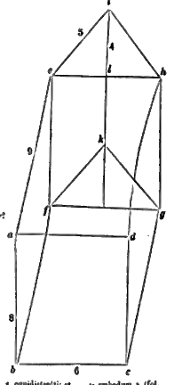

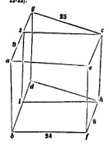
per .20., et uenient .280. pro embado basis quadrilateri .eg.; quibus ductis in dimidium .al., scilicet in .6., uenient .1680., ut supra, pro embado seratilis .abgdez.
SI uero corpus aliquod commistum fuerit ex solido sex basium equidistantium, et aliquo cuno, ut sunt arce, in quibus tenetur frumentum: embadum solidi cum embado seratilis in unum coniunge, et habebis propositum, uel catheti trianguli dimidium super altitudinem solidi equidistantium laterum adde; et quod prouenerit, in basem arce multiplica. Verbi gratia: esto arca, cuius basis sit quadrilaterum orthogonium .abcd.; et super angulos eius stent orthogonaliter recte .ae. bf. cg. dh., que sint sibi inuicem equales; et super puncta .e.h. protracte recte .ie. ih. facientes angulum .eih.: similiter super puncta .f.g. eleuentur recte .fk. kg. facientes angulum .fkg.; et sit penthagonum .aeihd. in superficie una: penthagonum quoque .bfkgc. in superficie alia; et sint ambo penthagona sibi inuicem equalia; et copulentur recte .ik. ef. fg. gh. et .he.; et erit quadrilaterum .eg. equidistans, et equale basi .ac.: quadrilaterum quoque .af. quadrilatero .gd., nec non et quadrilaterum .fc. quadrilatero .ad. Solidum ergo equidistantium laterum est .dhf., cuius embadum habebitur ex .ab. in .da. ducta in .ae.: embadum quoque seratilis .efghik. habebitur ex superficie .ef. in .eh., hoc est ex .ba. in .ad. ducta in dimidium catheti trianguli .fkg. Verbi gratia: sit .ab. 8.; et .ad. sit .6., et .ae. sit .9.; et unumquodque laterum trigonorum .eih. et .fkg. sit .5.; quare cathetus .kl. erit .4.; et multiplicetur .ba. in .ad., erunt .48.; pro quo ducto per .ae., et per dimidium .kl., hoc est per .11., uenient .528. pro embado totius arce. Et si commistio solidi et seratilis fiat secundum alium modum, ita quod una ex superficiebus, que supra basem erecta est, sit altior superficiei sibi equidistanti; et relique due superficies coniungantur eis, secundum quod fit in domibus, uel ut in sequenti figura patet, in qua ponimus superficiem .abgd. erectam orthogonaliter super superficiem .af.; et sit unaqueque rectarum .ab. et .gd. ulnarum .20.; et altitudo superficiei, que est .ag., uel .bd. sit ulnarum .15.; et ponimus superficiem .efch. equidistantem superficiei .ad.; et sit una queque rectarum .ec. fh. ulnarum .8.; et in unoquoque laterum .ae. et .bf. contineat ulnas .24. Quare una queque rectarum .gc. et .dh. erit .25; quod sic cognoscitur: per puncta quidem .ch. rectis .ea. et .fb. equidistantes protraham rectas .ci. hl., eritque unaqueque earum .24., cuius quadratum, scilicet .576., si addatur cum quadrato linee .ig., quod est .49., uenient .625. pro quadrato linee .gc., quorum radix, que est .25., erit linea .gc. Vnde si embadum huius corporis habere uis, lineas .ec. et .ag. in unum coniunges; et eorum dimidium, quod est 1/2 11, per embadum basis .af. multiplica, scilicet per .480., erunt 5520 pro embado totius corporis.
ETSI basis alicuius corporis huius prime partis quadrilatera, sed non rectiangula fuerit, non etiam latera sint equidistantia, cum in simili superficie, et equali, et equidistanti basi terminetur. Nimirum habebitur embadum eius, si area basis in altitudinem corporis ducatur; quod manifeste uidebitur, si per dyametros basis, et superficiei sibi equidistanti superficiem transire fecerimus secantem ipsum corpus in duo seratilia, quorum embadum habebitur, ut demonstratum est, per multiplicationem basis uniuscuiusque: que triangula erunt in eorum altitudine, que est eadem. Simili quoque modo si basis alicuius corporis huius partis fuerit penthagona, uel plurium laterum, poterunt
f. 0175 · p. 168
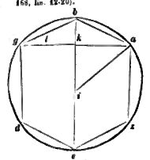
resolui in tres, uel plures cunos habentes bases triangulas, cum quelibet figura plana rectilinea resoluatur in duos triangulos minus numero laterum ipsius, ut penthagonum quod resoluitur in tres triangulos, exagonum in .iiij.or etc. Vnde cum areas omnium triangulorum cadentium infra basem similium corporum: hoc est aream eiusdem basis per altitudinem corporis multiplicaueris, nimirum embadum ipsius corporis habere non dubites. Sed quia inuentione embadorum multilaterum figurarum cadentium in circulis alia, preter ea que dicta sunt, dicere possumus; ut hoc opus perfectum sit, aliqua inde dicere presentialiter procuraui. Habetur quidem embadum exagoni equilateri et equianguli cadentis in circulo ex multiplicatione dyametri in tres quartas cordis anguli exagonici; que corda est latus trianguli equilateris cadentis in eodem circulo, cuius quadratum est triplum quadrati semidyametri circuli, hoc est lateris exagonici. Ad cuius rei euidentiam, in circulo .agd. esto exagonum .abgdez.; et protrahatur in ipso corda .ag., que secetur in duo equa per dyametrum .be. super punctum .k.; erit ergo triangulus .iab. sexta pars exagoni .abgdez.; et corda .ag. est latus trianguli equilateri cadentis in circulo .agd., cum arcus .abg. sit tertia circumferentie circuli; et diuidatur .kg. in duo equa super punctum .l.; erit ergo .ak. duplum .kl.: ex ductu quidem .ak. in .b.i. prouenit duplum embadi trianguli .abi.; quare ex ductu .al. in .bi. prouenit triplum embadi trigoni .abi. Sed dyameter .be. duplos est ex .b.i.; quare ex ducto dyametro .be. in .al. prouenit sextuplum embadi trianguli .abi. Quod sexcuplum embadi trianguli .abi. est embadum totius exagoni. Est enim .al. medietas et quarta, hoc est 3/4 corde .ag.: ergo ex dyametro circuli ducto in tres quartas corde anguli exagonici habetur embadum exagoni, ut predixi. Quod etiam habebitur ex multiplicatione trium quartarum dyametri in totam cordam anguli exagonici. Et cum simili inuentione inueni embadum tetragoni prouenire ex multiplicatione dyametri circuli continentis ipsum in septem octauas corde anguli exagonici. Embadum quoque octogoni prouenit ex multiplicatione dyametri circuli continentis ipsum in totam cordam anguli octogonici; que corda est latus quadrati cadentis in ipso circulo: et sic secundum hanc inuestigationem possunt inueniri embada figurarum plurium laterum cadentium in circulis.
Et si columnam metiri desideras, cuius dyameter basis sit pedum .7.; et altitudo uero, scilicet axis eius, sit pedum .20., aream circuli sue basis, que est 1/2 38, per altitudinem suam multiplica, et habebis pedes .770. pro embado ipsius columne. Et notandum, quod omnia corpora cuiuscumque sint forme, cum sibi inuicem fuerint similia, erit proportio embadi unius ad embadum alterius, sicut proportio triplicata similis lateris unius ad simile latus alterius. Verbi gratia: si alicuius solidi longitudo fuerit pedum .2., et alterius longitudo sit pedum .3., erit proportio minoris solidi ad maius sicut proportio binarij ad ternarium triplicata. Nam proportio triplicata binarij ad ternarium est sicut cubus, qui fit a binario ad eum, qui fit a ternario, hoc est sicut .8. ad .27. Est enim sicut sicut (sic) .2 ad 3, ita 8 ad 12., et 12 ad 18, et 18 ad 27.; et sicut proportio de .8 ad 27 est triplicata proportio binarij ad ternarium. Vnde si embadum minoris corporis sciueris, et eum per 27 multiplicaueris, et summam per 8 diuiseris, nimirum embadum maioris solidi proueniet, et cet.. Et notandum, quod quicquid dictum est superius de solidis, uel columna, hoc idem intellige de cisternis, et puteis, cum in eis intelligatur esse latum, longum, et altum.
f. 0176 · p. 169
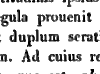

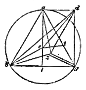

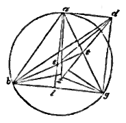
Incipit pars secunda de dimensione pyramidum.
CVM itaque piramidem aliquam metiri desideras, embadum sue basis, cuiuscumque sit forme, per tertiam altitudinis ipsius multiplica; et quod prouenerit, erit embadum ipsius piramidis; que regula prouenit ex eis que demonstrata sunt in EVCLIDE. Videlicet quod solidum est duplum seratilis. Seratile quoque est triplum sue piramidis habentem trigonam basem. Ad cuius rei euidentiam. Esto pyramis .abgd. equilatera habens basem triangulam, que est .abg.; altitudo uero eius est id quod cadit orthogonaliter a puncto .d. supra basem .abg.: quare oportet nos inuenire casum ipsius in triangulo .abg.; quod sic fit: circa triangulum .abg. describam circulum .abg. circa centrum .e. Dico quidem, .e. punctus est casus perpendicularis cadentis a puncto .d. super superficiem trianguli .abg.: quod si non est, esto .z., et copulentur recte .dz. za. zb. zg.; et quoniam .dz. perpendicularis est super planum .abg., rectus est unusquisque angulorum .dza. et .dzb. et .dzg.: latera ergo .dz. et .za. possunt super rectam .da. Similiter et quadrata rectarum .dz. zb. equantur quadrato linee .db.: simili quoque modo et quadratum lateris .dg. equatur quadratis rectarum .dz. zg. Sed latera .da. db. dg. sibi inuicem sunt equalia; ergo duo quadrata linearum .dz. et .za. duobus quadratis linearum .dz. et .zb. equalia sunt: comuniter auferatur quadratum linee .dz., remanebunt quadrata linearum .za. zb. equalia; quare .za. recta equalis est recte .zb. Similiter ostendetur, rectam .zb. equalem esse utrique rectarum .za. zb.; ergo a puncto .z. ad periferiam circuli .abg. concurrunt tres recte sibi inuicem equales; quare punctus .z. est centrum circuli .abg.: quod minime locum habet, cum .e. punctus sit centrum circuli .abg. Protracto quidem cateto .de., si tertiam eius multiplicabimus per aream trigoni .abg., habebimus embadum piramidis .abg. Quod ostendimus cum numeris: sit unumquodque laterum pyramidis .12.; et copulentur recte .ae. be. ge., que sibi inuicem sunt equales; et protrahantur recte .ae. be. in punctis .i.t.; et erit punctus .i. super dimidium lateris .bg., cum anguli .bai., et .gai. sibi inuicem sint equales: et quia .ab. et .ag. sibi inuicem sunt equalia, .ai. cathetus est super rectam .bg.: et quia recta .bt. secat super dimidium lateris .ag., secabit etiam et cathetum .ai. super tertiam eius, ut in tractatu triangulorum in tertia distinctione huius operis demonstraui. Extracto quidem quadrato recte .bi. ex quadrato lateris .ab., scilicet 36 de .144., remanent .108. pro quadrato linee .ai.; et quia .ei. est tertia ex .ai., erit quadratum linee .ei. nona pars quadrati linee .ai.: ergo quadratum linee .ei. est .12.; cui si addatur quadratum linee .ib., erunt .48. pro quadrato linee .be.: uel quia .ae., hoc est .be., est 2/3 ex .ai., erit quadratum linee .be. 48., scilicet 4/9 ex quadrato linee .ai.: quod si auferatur ex quadrato linee .db., remanebit quadratum catheti .de. 96.: ex ductu quidem .ai. in .bi. prouenit radix de .3888. pro area trianguli .abg.: quod si ducatur in tertiam .de., hoc est in nonam quadrati eius, que est 2/3 10., uenient 41472. pro quadrato embadi pyramidis .abgd., cuius radix est 2/3 203., et aliquantulum plus; quod plus est minus de 1/20, et plus de 1/21. Ex hoc quidem erit manifestum quod in omni pyramide equilatera quadratum sue altitudinis est 2/3 quadrati unius laterum eius; nec non et quadratum recte procedentes ab unoquoque angulorum ad casum altitudinis pyramidis est tertia quadrati eiusdem lateris: quod possumus
f. 0177 · p. 170
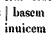

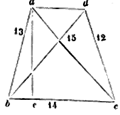

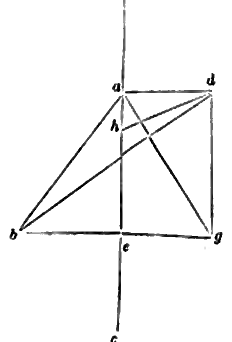
inuestigare hoc modo. Est enim .bi. dimidium ex .bg.; quare quadratum ex .bi. est quarta quadrati ex .ab.; quare quadratum ex .ai. est 3/4 ex quadrato, quod fit a recta .ab.: est enim recta .ae. 2/3 ex .a.i.; quare quadratum ex .ae. est 4/9 ex quadrato recte .ai.; ergo quadratum ex .ae., hoc est ex .be., uel ex .ge., est 4/9 de 3/4 quadrati lateris .ab. Sed 4/9 de 3/4 alicuius rei est quantum 3/4 de 4/9 eiusdem rei, hoc est 1/3; ergo quadratum uniuscuiusque rectarum .ae. be. ge. est tertia quadrati lateris .ba.; hoc est ex latere .da. Vnde si ex quadrato lateris .da. auferatur quadratum linee .ae., remanebunt pro quadrato altitudinis .de. 2/3 ex quadrato lateris .da., ut predixi. Et notandum quod in omni pyramide, cuius basis triangula est habente latera ab angulis basis ipsius adscendentia ad punctum summitatis eius sibi inuicem equalia; casus ipsius altitudinis erit centrum circuli continentis basem ipsius pyramidis. RVRSVS esto pyramis .abcd. habens latera .da. db. dc. sibi inuicem equalia; basis uero eius, scilicet trigonum .abc., sit cuiuslibet triangule forme; et uolumus inuenire casum cadentem a puncto .d. super trigonum .abc. per numerum; qui casus erit centrum circuli continentis trianguli .abc.; protraham primum cathetum .ae. in triangulo .abc., in quo diuidam id quod fit ex .ba. in .ac.; et quod prouenerit, erit dyameter circuli continentis triangulum .abc., ut in tractatu circulorum superius demonstraui. Ad cuius rei similitudinem esto latus .ab. 13., latus .ac. 15., latus quoque .bc. sit .14.; quare cathetus .ae. erit 12.: in quo si diuiserimus superficiem ex .ba. in .ac., hoc est .195., uenient 1/4 16. pro dyametro circuli continentis triangulum .abc.; cuius dimidium, scilicet 1/8 8., est differentia, que est a casu altitudinis pyramidis ad unumquemque angulorum basis. Ponamus etiam, unumquodque laterum .da. db. dc. esse .12.; quare si ex quadrato ipsius, que est 144, auferatur quadratum de 1/8 8, quod est 1/64 66, remanebunt 78, minus 1/64 pro quadrato catheti .dg.; in cuius nonam si multiplicauerimus quadratum trianguli .abc., quod est 7056., habebitur quadratum embadi totius pyramidis. Et notandum quod si basis similium pyramidum fuerit acutiangula, tunc casus altitudinis ipsius cadet infra trigonum .abc.: et si angulus .bac. fuerit rectus, tunc dyameter circuli continentis triangulum .abc. erit recta .bc.; et suprascriptus casus erit super dimidium linee .bc.: et si angulus .bac. fuerit obtusus, tunc ipse casus erit extra triangulum a parte .bc. Item ponam pyramidem, cuius basis .abg. sit trigonum equilaterum, uel equiclurium; ex lateribus uero .da. db. dg. sint duo tantum sibi inuicem equalia, que sunt .db. dg.; uolo ostendere modum quomodo habeatur altitudo ipsius pyramidis. Quoniam in trigono .dbg. duo latera .db. et .dg. alternis equalia sunt; si a puncto .d. super basem .bg. cathetus ducatur .de., diuidet basem .bg. in duo equa super .e. Similiter quia trianguli .abg. latera .ab. et .ag. equalia sunt; si a puncto .e. recta protrahatur .ea., erit utique .ae. recta cathetus super basem .bg.: producatur quidem .ae. in utramque partem in infinitum in punctis .f.c.; deinde super rectam .f.c. producam cathetum a puncto .d., qui erit altitudo pyramidis .dabg., cuius altitudinis casus quandoque cadet inter .ae., quando cadet extra triangulum inter puncta .a.f., uel .e.c., uel aliquando in puncto .a., uel in puncto .e.; que omnia ostendamus cum numeris. Esto unumquodque laterum .ab. et .ag. 10; latus quoque .bg. .12.; et unumquodque laterum .db. et .dg. .14.; latus quoque .da. sit .12.: inueniam primum cathetum .de., qui erit radix de .160., cum quadratum casus .be. ablatum sit ex quadrato lateris .db. Similiter
f. 0178 · p. 171
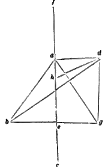

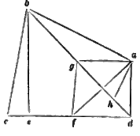

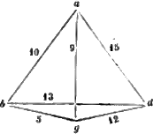
cathetus .ae. erit .8.: deinde inueniam casum trigoni .dae. super basem .ae. sic: ex quadrato quidem, quod fit ex .de., auferam quadratum ex .da., scilicet 144 de 160., remanebunt .16.; quibus diuisis per .ae., uenient .2.; quibus additis cum .ae., erunt .10.; cuius dimidium, scilicet .5., est maior casus a latere maiori .de.: quare ponam .h. super punctum casus, ut sit .eh. 5, remanebunt pro .ah. .3.: ergo si quadratum linee .ah. auferatur ex quadrato linee .da.; uel ex quadrato linee .de. auferatur quadratum linee .eh., erit illud quod remanebit, scilicet 135., quadratum catheti .dh. Et notandum, quod si angulus .dah. esset rectus, tunc .da. esset cathetus descendens a puncto .d.; et si angulus .dah. esset maior recto, tunc cathetus descendens a puncto .d. caderet extra triangulum super lineam .af.: simili quoque modo si angulus .deh. esset rectus, tunc .de. esset altitudo pyramidis; et obtusus esset angulus .deh., tunc cathetus descendens a puncto .d. caderet inter puncta .e.c. extra triangulum: et si unusquisque angulorum .dah. et .deh. acutus esset, caderet utique tunc perpendicularis inter puncta .a.e. super lineam .ae. Esto rursus pyramis, cuius summitas sit .a.; basis quoque eius sit trigonum .bcd. diuersilaterum, cuius latus .bc. sit 13.; latus quoque .cd. 14.; latus uero .db. 15., cuius cathetus esto recta .be.; ex reliquis uero lateribus descendentibus a puncto .a. ad puncta .b.c.d. sint latera .ac. et .ad. equalia, quorum unumquodque sit pedum .10.; reliquum uero latus .ab. sit .15.: uolo ergo cathetum cadentem a puncto .a. super planum, in quo est trigonum .bcd., inuenire. Protraham primum in trigono .acd. cathetum .af.; et per punctum .f. in superficie trigoni .bcd. protraham lineam .fg. facientem rectos angulos .gfd. et .gfe.; et copulabo rectam .ag.; et in trigono .afg. super lineam .fg. cathetum producam, que erit cathetus cadens a puncto .a. super planum trigoni .bcd.; que cathetus sic per numerum inuenitur: quia rectus est angulus .gfd., erit linea .fg. equidistans catheti .be.; quare est sicut .df. ad .de., ita .dg. ad .db.: est enim .de. 9, et .df. est .7., scilicet dimidium ex .cd., cum equiclurium sit trigonum .acd.; ergo est sicut 7 ad 9., ita .dg. ignota ad .db. notam, que est .15.: quare si multiplicauerimus .7. per .15., et diuiserimus per .9., uenient 2/3 11. pro linea .dg. Similiter si multiplicauerimus .df. per .be., scilicet 7 per 12, et diuiserimus per .de., uenient 1/3 9 pro linea .fg.: deinde in trigono .abd. super latus .bd. cathetum protraham .ah., et erit casus longior .bh. 2/3 11.; breuior uero .dh. erit 1/3 3.: quare quadratum catheti .ah. erit 8/9 88; cum quo si addatur quadratum linee .hg., quod est 4/9 69., erunt 1/3 158.. pro quadrato linee .ag. Rursus si de quadrato linee .ad. auferatur quadratum ex .df., scilicet 49 de .100., remanebunt .51. pro quadrato linee .af.; ergo linea .af. est radix de .51.; et linea .ag. est radix de 1/3 158.; linea quoque .fg. est 1/3 9.: et postquam habemus latera trigoni .afg. nota, possumus notitiam catheti descendentis ab .a. super lineam .fg. habere per doctrinam, quam docuimus in dimenetione embadorum triangulorum.
RVRSVS adiaceat pyramis .a.b.g.d., cuius basis est trigonum .abg. diuersilaterum; latera uero descendentia a puncto .d. in puncta .a.b.c. sint similiter diuersa, et inequalia; quare aliquando erit unum ex eis orthogonaliter erectum super trigonum .abg., et quandoque erunt omnia latera declinantia. Verbi gratia: sit latus .ab. 10., et .ag. 9., et .bg. 5., et .da. 15.; latus quoque .db. 13., et .gd. sit .12.; in hoc pyramide recta
f. 0179 · p. 172
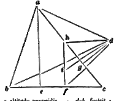

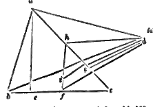

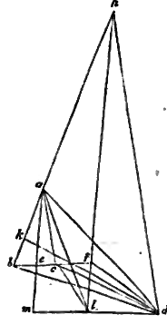
.dg. est cathetus ipsius, cum quadrata linearum .bg. et .gd. equentur quadrato linee .db.; nec non et quadrata linearum .dg. et .ga. equentur quadrato linee .ad.; ergo si tertia ex .dg. ducatur per embadum trianguli .abg., habebitur embadum pyramidis .a.b.g.d. Sed non sit cathetus pyramidis aliqua ex lineis descendentibus a summitate eius, ut in pyramide .abcd., cuius latus .ab. sit .13., .bc. 14., .ac. 15.; latus quoque .bd. 13., et .dc. 15., et .da. 14. Primum in triangulo .abc. protraham cathetum .ae.; et in trigono .dbc. protraham cathetum .df.; et per punctum .f. protraham lineam .fh. equidistantem catheto .ae., ut sit angulus .hfc. rectus: deinde in trigono .dac. protraham cathetum .dg. super rectam .ac.; ex quibus omnibus habebitur nota linea .dh.; quare latera trigoni .dfh. erunt nota; ergo et cathetus cadens in ipso a puncto .d. super lineam .fh. erit nota, que erit altitudo pyramidis. Verbi gratia: cathetus quidem .ae. est .12.; casus quoque .be. 5.; et casus .ec. est 9. Similiter cathetus .df. in superficie trianguli .dbc. est .12.; et casus .fc. est .5.: et quia .fh. equidistans est catheto .ae., erit sicut .cf. ad .ce., ita .fh. ad .ae., et .ch. ad .ca.; quare .fh. est 2/3 6., et .ch. est 1/3 8.: deinde ut inueniamus cathetum .dg., auferam quadratum .dc. ex quadrato lateris .da., scilicet 169 de 196., remanent .27.; quibus diuisis per .ac., uenient 4/5 1.; quod addam cum .ac., erunt 4/5 16.; cuius dimidium, scilicet 2/5 8., est casus maior .ag.; quare casus minor .gc. est 3/5 6.; et ex his habebuntur 1/5 11 pro catheto .dg.: cuius quadrato si addatur quadratum ex .gh., habebuntur 4/9 128. pro quadrato linee .dh.; quare .dh. est 1/3 11.: restat ut in trigono .dfh. inueniamus cathetum cadentem a puncto .d. super lineam .fh.; et erit casus maior .fi. 1/2 4.; quare cathetus .di., qui est altitudo pyramidis, erit radix de 3/4 123.: in qua si multiplicauerimus tertiam embadi trigoni .abc., que est .28., habebimus radicem de 97020 pro embado pyramidis .abcd. Notandum, quod si trigoni .dbc. angulus .dcb. fuerit obtusus, tunc cathetus .df. cadet extra triangulum .dbc., ut in hac alia cernitur formula, in qua ponimus latus .ac. 13., et .bc. 9.; latus quoque .ab. radicem de .160.; et sit latus .da. 19.; latus quoque .db. 17.; latus uero .dc. sit .10.: quare cathetus .ae. erit .12.; et casus .be. erit .4.; et .ec. erit .5.: cumque extraxerimus quadratum .dc. de quadrato lateris .db., remanebunt 189 diuidenda per .bc., scilicet per .9., uenient .21.; que si addita fuerint cum eisdem .9.; et summa diuidatur in duo equa, prouenient .15. pro casu .bf.: ergo punctus .f. cadit extra .b.c.; et est .cf., 36., cuius quadratum si auferatur ex quadrato lateris .dc., uenient .64. pro quadrato catheti .df.; quare .df. est .8.: deinde protraham lineam .fh. equidistantem catheto .ae.; et faciam eam concurrere cum linea .ba. in puncto .h.; et copulabo .dh., et erit trigonum .hbf. orthogonium, et simile trigono .abe.: quare erit sicut .be. ad .ea., ita .bf. ad .fh.; quare .fh. est .45., cuius quadratum, quod est 2025, si addiderimus cum quadrato basis .bf., quod est 225, uenient .2250. pro quadrato linee .bh. Vel quia est sicut .be. ad .bf., ita ba ad bh.; si multiplicauerimus quadratum ex .bf. per quadratum ex .ba., hoc est 225 per 160, et diuiserimus summam per quadratum ex .be., quod est 16, uenient similiter .2250. pro quadrato linee .bh.: deinde ut perueniamus ad notitiam linee .dh., inueniam cathetum trigoni .dba. cadentem a puncto .d. super latus .ba.; quod sic fit: ex quadrato, quod fit ex .da., auferam quadratum ex .db., scilicet 289 de 361, remanebunt .72. diuidenda per latus .ba., quod est radix de .160.; quare quadratum de .72., quod est 5184, diuidam per 160, et ueniet 2/5 32.; quibus additis cum 160, uenient 2/5 192.: de quibus si auferatur
f. 0180 · p. 173
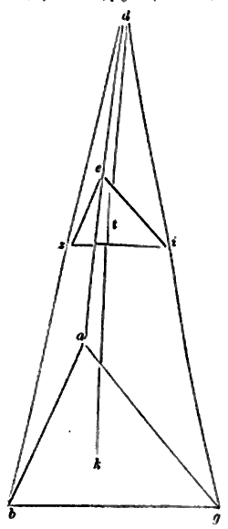

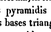
duplum radicis multiplicationis de 2/5 32 in 160.; quod duplum est .144., remanebunt 2/5 48. pro quadrato dupli minoris casus, qui sit .bk.; quare quadratum ex .bk. erit 1/10 12, scilicet quartum de 2/5 48; quibus 1/10 12 extractis de quadrato linee .db., remanebunt 9/10 276 pro quadrato catheti .dk.: deinde ut habeamus notitiam linee .kh., addam quadratum ex .bk. cum quadrato, quod fit a .bh., scilicet 1/10 12 cum 2250, erunt 1/10 2262; ex quibus auferam duplum radicis eius, quod fit ex 1/10 12 in 2250; quod duplum est .330., remanebunt 1/10 1932 pro quadrato linee .kh.: cui si addatur quadratum ex .dk., scilicet 9/10 276, uenient .2209. pro quadrato linee .dh.; quare .dh. est .47.: deinde ut inueniamus cathetum trigoni .dfh. cadentem a puncto .d. super latus .fh., quod est .45.; et latus .df. est .8., operabimur suprascripto modo; et inueniemus, ipsum cathetum cadere extra lineam .hf. secundum quantitatem de 1/3 1; qui casus esto .fl.; et auferatur quadratum ex .fl., quod est 7/9 1, ex quadrato ex .df., quod est .64., remanebunt 2/9 62 pro quadrato linee .dl., scilicet cathetum pyramidis .abcd. Quod idem inuenies, si ex quadrato lateris .dh. auferatur quadratum casus .hl.; uel si ex quadrato linee .dc. auferatur quadratum linee .cl.; et est quadratum linee .cl. equale duobus quadratis linearum .cf. fl.: uel aliter protraham lineam .ae. in puncto .m.; et sit .em. equalis .fl.; quare tota .am. erunt 1/3 13.; et copulabo .lm., que erit equalis ex .ef., que est .11.: addam quadrata linearum .am. et .ml., et habebo quadratum linee .al.: quod si auferam ex quadrato linee .da., scilicet ex .361., remanent similiter 2/9 62 pro quadrato catheti .dl. Ex hoc ergo patet, quod recta .dl. orthogonaliter stat super planum .fbh., orthogonaliter cum faciat rectos angulos cum lineis .lh. la. lc.: deinde si cathetum .dl. multiplicauerimus per tertiam trigoni .abc., que est .18., habebimus .20160 pro quadrato embadi totius pyramidis .abcd.; et sic in omnibus pyramidibus procedere studeas: potes etiam ad notitiam altitudinum omnium pyramidum cum instrumentis supradictis arundinum, uel cum filo, et plumbo uerissime peruenire. ET si basis alicuius pyramidis fuerit quadrilatera, aut multilatera, non minus tertia sue altitudinis, in totam basim erit multiplicanda; quia si basis, quodcumque sit laterum, in trigona diuisa fuerit; et ab angulis ipsorum triangulorum ad punctum altitudinis pyramidis recte protrahantur, resoluetur itaque tota pyramis in tot pyramides habentes bases triangulas, quot fuerint trianguli protracti in ipsa base; et erit altitudo omnium pyramidum una. Quare si tertia pars ipsius altitudinis ducatur in aream uniuscuiusque trianguli, hoc est in totam basim diuise pyramidis, nimirum embadum omnium pyramidum resolutorum, scilicet totius pyramidis, habebitur. Et si ab aliqua pyramide auferatur pyramis aliqua per superficiem equidistantem sue basi; et uolueris scire embadum residui; quod curta, siue decurtata pyramis nuncupatur. Ex embado totius pyramidis embadum abscise pyramidis tolle: et quod remanserit, erit embadum decurtate pyramidis. Verbi gratia: si ex pyramide .dabg., cuius basis est trigonum .abg., auferatur pyramis .dezi., cuius basis, scilicet trigonum .ezi., sit equidistans basi .abg.; et uolumus embadum curte pyramidis .abgezi. inuenire. Ex embado quidem pyramidis .dabg. tollemus embadum pyramidis .dezi.; et quod residuum fuerit, erit embadum decurtate pyramidis .abgezi.: uel aliter, quoniam trigonum .ezi. equidistans est trigono .abg.; et sunt latera trigoni .ezi. secantia superficies .dab. et .dbg. et .dga., erunt etiam et latera ipsorum trigonorum equidistantia; latus quidem .ez. lateri .ab., et latus .ei. lateri .ag.: similiter et latus .zi. lateri .bg.: et quoniam
f. 0181 · p. 174
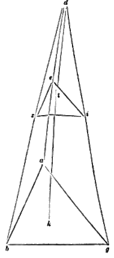
in trigonis .dab. et .dag. et .dbg. protracte sunt recte .ez. ei. zi. equidistantes basibus .ab. ag. bg., erunt anguli exteriores equales oppositis et interioribus angulis, siquidem qui sub .dez. angulo qui sub .dab., nec non et anguli qui sub .dze. et .dzi. et .diz. et .die. et .dei. angulis qui sub .dba. et .dbg. et .dgb. et .dga. et .dag. sunt equales. Sunt enim et anguli .zei. et .eiz. et .ize. equales angulis .bag. et .agb. et .gba., cum superficies .ezi. equidistet superficiei .abg. Quare anguli solidi qui ad .e. et .z. et .i. pyramidis .dezi. equantur angulis solidis, qui sunt ad .a. et .b. et .g. Vnde patet, pyramidem .dezi. similem esse toti pyramidi .dabg. Similes ergo pyramides ad se inuicem sunt in triplici proportione similium laterum: quare proportio pyramidis .dabg. ad pyramidem .dezi. est proportio triplicata lateris .bg. ad latus .zi.; quare ponamus esse sicut .bg. ad .zi., ita quantitas .c. ad .f.; et sicut .c. ad .f., ita .f. ad .x. et .x. ad .y.; et erit .c. ad .y. proportio triplicata lateris .bg. ad latus .zi. Quare est sicut .c. ad .y., ita pyramis .dabg. ad pyramidem .dezi.: auferatur quidem ex quantitate .c. quantitas .y., et remaneat quantitas .h.; erit deinceps sicut .c. ad .y., ita quantitas .h.y. ad quantitatem .y. Ergo est sicut quantitas .h.y. ad quantitatem .y., ita pyramis .dabg. ad pyramidem .dezi.: erit ergo disiunctim sicut .h. ad .y., ita curta pyramis .abgezi. ad pyramidem .dezi. Vnde si latera trigoni .abg. et .ezi.; et altitudo pyramidis .dabg. erunt nota, erit siquidem notum, per ea que dicta sunt, embadum curte pyramidis .abgezi. Que ostendautur cum numeris. Sit latus .ab. 13., et .ag. 15., et .bg. 14.; et altitudo pyramidis .dabg., que sit recta .dk., sit .24.; et super dimidio laterum .da. db. dg. transeat superficies trigoni .ezi.; et erit latus .ez. 1/2 6; et latus .ei. 1/2 7; et latus .zi. erit .7.; et cathetum .dk. ponamus .24., que secta est a superficie .ezi. in duo media in puncto .t. Et ponamus quantitatem .c. esse .8.; et quia latus .bg. duplum est lateri .zi., erit quantitas .c. duplum quantitatis .f., et .f. quantitatis .x., nec non et .x. duplum est quantitatis .y.; quare .f. est .4., et .x. 2., et .y. est .1.; et tollatur ex quantitate .c. equalis quantitati .y., scilicet .1. de 8, remanebunt .7. pro quantitate .h.: et quia inuenimus esse sicut .h. ad .y., ita pyramis curta .abgezi. ad pyramidem .dezi. Est enim .h. septuplum ex .y.; quare decurtata pyramis .abgezi. est septuplum pyramidis .dezi. Sed pyramis .dezi. est .84., que proueniunt ex ductu tertie partis altitudinis .dt., que est .4., in triangulum .ezi., qui est .21. Quare si multiplicauerimus .84. per .7., habebimus .588. pro embado curte pyramidis .abgezi.: uel si ex tota pyramide .dabg., que est 672.; que proueniunt ex ductu tertie partis altitudinis .dk., que est .8., in triangulum .abg., qui est .84., extraxerimus .84., scilicet pyramidem .dezi., remanebunt similiter 588 pro pyramide .abgezi.
ADIACEAT rursus pyramis .dabg., cuius summitas sit .d.; et auferatur a pyramide .dabg. pyramis .dezi. cum superficie .ezi. equidistante basi .abg.; et protrahatur in ea a puncto .d. cathetus .dtk. Dico quod embadum curte pyramidis .abgezi. prouenit ex ductu tertie partis altitudinis ipsius, que est .ek., in summam arearum basis, et capitis illius, et superficiei, que est in proportione media inter superficiem basis, et superficiem capitis. Quod sic probatur: super rectam quidem .bg. ordinabo superficiem rectiangulam .bm. equalem superficiei trianguli .abg.; et ponam lineam .ng. equalem linee .z.i.; et applicabo super rectam .ng. superficiem rectiangulam .nopg.
f. 0182 · p. 175
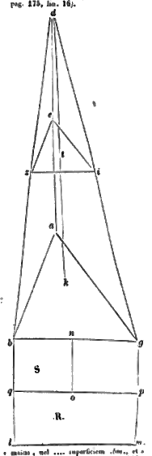

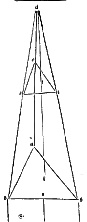
equalem superficiei trianguli .ezi.; et ducam rectam .po. in .q. Dico primum, superficiem .np. similem esse superficiei .bm. Quod sic probatur: quoniam, ut in antecedente figura, trigona .abg. et .ezi. demonstrata sunt equiangula esse, erunt etiam propter hoc sibi inuicem similia. Similia uero trigona in duplici proportione sunt similium laterum. Latera quidem .bg. et .zi. sibi inuicem sunt similia; quare proportio trigoni .abg. ad trigonum .ezi. est duplicata lateris .bg. ad latus .z.i.: sit itaque sicut .bg. ad .zi., ita .zi. ad .u.; quare est sicut .bg. ad .v., ita trigonum .abg. ad trigonum .ezi. Sed trigono .abg. equalis est superficies rectiangula .bm., et trigono .ezi. equalis superficies .np. Quare erit sicut .bg. ad .v., ita superficies .bm. ad superficiem .np.: et est .ng. equalis recte .zi. Vnde est sicut .bg. ad .ng., ita .ng. ad .v. Et quando tres recte continue proportionales sunt, erit sicut prima ad tertiam, ita figura, que est a prima, ad figuram que est ad secundam similem, et similiter descriptam. Vnde est sicut .bg. ad .v., ita quadrilaterum .bm. ad quadrilaterum descriptum a linea .gn. simile quadrilaterum .bm. Vnde si quadrilaterum .np. non est simile quadrilatero .bm., describentur super lineam .ng., et in angulo .ngm. aliud quadrilaterum, quod erit maius, uel minus quadrilatero .np.: ad quod quadrilaterum .bm. descriptum a linea .bg. haberet proportionem eam quam habet .bg. ad .v. Sed sicut .bg. ad .v., ita demonstratum est quadrilaterum .bm. ad quadrilaterum .np.: ergo quadrilaterum .bm. ad duo diuersa haberet eandem proportionem; quod est inconueniens. Simile est ergo quadrilaterum .np. quadrilatero .bm., ut predixi. Similes quidem superficies circaequales angulos latera habent proportionalia. Vnde est sicut .bg. ad .gm., ita .ng. ad .gp.: permutatim ergo est sicut .bg. ad .ng., ita .mg. ad .pg. Sed sicut .mg. ad .pg., ita superficies .bm. ad superficiem .bp.; et etiam sicut .bg. ad .ng., hoc est sicut .mg. ad .pm., ita superficies .bp. ad superficiem .pn.; ergo est sicut superficies .bm. ad superficiem .bp., ad superficiem .pn. Quare superficies .bp. est media in proportione inter superficiem .bm., et superficiem .pn., hoc est inter superficiem .abg., et trigonum .ezi. Quare ostensum est quod multiplicatio tertie partis .tk. in coniunctum ex superficiebus trigonorum .abg. et .ezi., et superficiei .bp., hoc est in coniunctum ex superficiebus .bm. et .bp. et .pn. faciat embadum abscisionis .eziabg.: primum quidem manifestum est quod embadum totius pyramidis .dabg. habetur ex multiplicatione tertie partis altitudinis .dk. in superficiem trianguli .abg., hoc est in superficiem .bm.; ergo ex ductu .dk. in superficiem .bm. prouenit triplum aree pyramidis .dabg. Sed multiplicationi .dk. in superficiem .bm. equales sunt multiplicationes ex .dt. et .tk. in superficiem .bm.; ergo ex multiplicationibus .dt. in .bm., et ex .tk. in .bm. prouenit triplum aree pyramidis .dabg.: de quo triplo si auferatur triplum aree pyramidis .dezi.; quod triplum habetur ex ductu .dt. in superficiem trianguli .ezi., hoc est in superficiem .np., remanebit multiplicatio ex .tk. in superficiem .bm., et ex .dt. in superficiem .R. et S. pro area tripli curte pyramidis .eg.: his itaque demonstratis, copulabo rectas .bk. et .zt., que erunt in superficie trianguli .dkb.; et erunt recte .bk. et .tz. equidistantes. Quare est sicut .bd. ad .zd., ita .kd. ad .dt. Sed sicut .bd. ad .zd., ita .bg. ad .ng., et .mg. ad .pg.: quare diuisim erit sicut .bn. ad .ng., uel sicut .mp. ad .pg., ita .kt. ad .dt. Sed sicut .mp. ad .pg., ita superficies .qm. ad superficiem .bp.; quare multiplicatio .tk. in superficiem .bp.
f. 0183 · p. 176
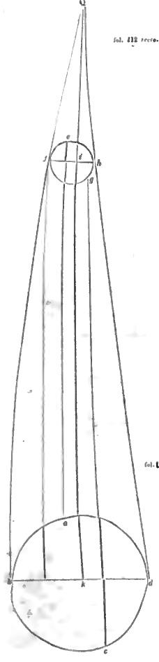
equalis est multiplicationi ex .dt. in superficiem .R., hoc est in superficiem .qm. Rursus quia est sicut .bn. ad .ng., ita .tk. ad .dt.; et est sicut .bn. ad .ng., ita superficies .S., hoc est superficies .bo., ad superficiem .np.: quare multiplicatio ex .tk. in superficiem .np. equatur multiplicationi ex .dt. in superficiem .S.; ergo multiplicatio ex .tk. in coniunctum ex superficiebus .bp. et .pn. equalis est multiplicationi .dt. in superficiem .R. S.: comuniter adiaceat factum ex .tk. in superficiem .bm., erit multiplicatio .tk. in superficies .bm. bp. et .pk. equalis multiplicationi .tk. in .bm., et ex .de. in superficies .R.S. Sed ex multiplicatione .tk. in superficiem .bm., et ex .dt. in superficies .rs. prouenit triplum aree curte pyramidis .eg.; ergo ex ductu .tk. in superficies .bm. bp. pm., hoc est in superficies trigonorum .abg. ezi., et in superficiem .bp., que est media inter ipsa trigona, prouenit triplum embadi abscise pyramidis .eg. Quare multiplicatione tertie partis ex .tk. in superficies trigonorum .abg. et .ezi., et in superficiem .bp. prouenit embadum preposite abscisionis pyramidis; et hoc est quod uolui demonstrare. Et si numeris utilibet. Esto latus .bg. palmorum .12.; cathetus cadens in triangulo .abg. a puncto .a. super latus .bg. sit .15.; latus quoque .zi. sit .4.; altitudo quidem .tk. esto 12. Quare erit sicut .3. ad .1., ita .bg. ad .z.i.: triplum est enim latus .bg. lateris .z.i.; et est sicut .bg. ad .zi., ita .z.i. ad .v.; quare .bg. nonuplum est ex .v.: et quia est sicut .bg. ad .v., ita superficies trigoni .abg. ad superficiem trigoni .ezi. Superficies ergo trianguli .abg. est nonupla trianguli .ezi. Nam superficies trianguli .abg. est palmorum .90. quadratorum, qui colliguntur ex ducto catheto predicto in dimidium basis .bg.: quare noua pars de palmis .90., scilicet .10., est area trianguli .ezi.; superficies uero cadens inter triangulum .abg., et triangulum .ezi., in proportione media est .30.; quia est sicut 90 ad 30., ita 30 ad .10. Collectis itaque his tribus superficiebus in unum, scilicet 90 et 30 et 10., faciunt .130.; quibus ductis per tertiam .tk., scilicet per 4., uenient palmi cubici .520. pro area curte pyramidis .eg. Ad quam etiam summam ueniemus, si ex toto pyramide .dabg. auferamus pyramidem .dezi.; quod sic fit. Quoniam est sicut .bg. ad .zi., hoc est sicut .bg. ad .ng., ita .dk. ad .dt.: disiunctim ergo erit sicut .bn. ad .ng., ita .kt. ad .td.: quare si multiplicauerimus .ng. per .kt., hoc est .4 per 12., et diuiserimus per .ba., hoc est per 8., uenient .6. pro catheto .dt.; quare tota .dk. erit .18.; ex quibus tertia ducta in trigonum .abg., scilicet in .90., uenient .540. pro embado totius pyramidis .dabg.; de quo embado si auferatur embadum pyramidis .dezi., scilicet .20., que proueniunt ex ducta tertia catheti .dt. in triangulum .ezi., scilicet de .2. in .10., remanebunt .520., ut supra, pro embado curte pyramidis .eg. Similiter ostendetur eisdem demonstrationibus, si basis alicuius curte pyramidis fuerit quadrilatera, uel multilatera, uel circularis, ex eis omnia que dicta sunt euenire; tamen ut hoc opus magis perfectum sit, quandam curtam pyramidem habentem basem, et caput circulares proponamus.
ESTO quidem pyramis curta .ec., cuius basis sit circulus .abcd., et eius caput sit circulus .efgh., et altitudo eius sit linea .ik., cuius termini sunt centra circulorum predictorum; et protrahantur dyametri ipsorum .bd. et .fh.; et sint ipsi circulj sibi inuicem equidistantes. Quare multiplicabitur tertia ex .ik. in summam superficierum circulorum .abcd. et .efgh.; et eius superficiei, que est media in proportione utriusque
f. 0184 · p. 177
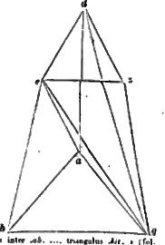
circulj. Verbi gratia: semi .bd. pone inter utrumque in proportione media semidyametrum .bk. et .i.f.l.m. lineam, cuius spatio circinetur circulus .mno. Dico primum, circulum .mno. cadere in proportione media inter circulum .abc., et circulum .efg. Probatio. Quoniam est sicut .bk. recta ad rectam .lm., ita recta .lm. ad rectam .if. Quare erit sicut .bk. ad .fi., ita quadratum ex .bk. ad quadratum ex .lm. Sed sicut quadratum ex .bk. ad quadratum ex .ml., ita quadratum dyametri .bd. ad quadratum dyametri .pm. Est enim sicut quadratum dyametri .bd. ad quadratum dyametri .pm., ita circulus .abcd. ad circulum .mnpo.: ergo est sicut quadratum semidyametri .bk. ad quadratum semidyametri .ml., ita circulus .abc. ad circulum .mno.; et quia est sicut .bk. ad .lm., ita .lm. ad .if. erit sicut quadratum ex .bk. ad quadratum ex .n.q.m., ita quadratum ex .lm. ad quadratum ex .if. Quare est sicut quadratum ex .ml. ad quadratum ex .if., ita circulus .abc. ad circulum .omn. Est etiam et sicut quadratum ex .lm. ad quadratum ex .if., ita circulus .omn. ad circulum .ofg. Ostensum est enim esse sicut quadratum ex .mb. ad quadratum ex .if., ita circulus .abc. ad circulum .omn.; ergo est sicut circulus .abc. ad circulum .omn., ita circulus .omn. ad circulum .efg.; ergo circulus .omn. medius est in proportione inter circulum .abc., et circulum .efg.; et hoc uolui demonstrare. Et ut habeamus summam ex horum suma trium circulorum, aggregabimus quadrata semidyametrorum .bk. ml. fi. in unum; et quod prouenerit, ducemus in 1/7 3., et habebimus summam arearum ipsorum trium circulorum; quam si duxerimus in tertiam altitudinis .ik., habebimus embadum curte pyramidis .ec. Que ostendantur cum numeris. Sit semidyameter .bk. 4., et semidyameter .if. sit .1. Quare semidyameter .lm. erit .2.; quia est sicut .4. ad .2., ita .2. ad .1.; et agregemus quadrata horum trium semidyametrorum, scilicet .16. et .4. et .1., erunt .21.; quibus ductis in 1/7 3., uenient .66.; quibus ductis in tertiam altitudinis .ik., que sit .15., uenient pro embado totius pyramidis .ec. 330. Et si uolumus supplere totam pyramidem .qabcd., intelligemus, trigonum .qbd. secare pyramidem .qabcd. in duo equa, in cuius superficie protracto est cathetus .ik.: quo catheto protracto in .q., erit linea .kq. cathetus trianguli .qbd.; in quo si protrahamus lineam .fr. equidistantem linee .ik., erit linea .fr. equalis linee .ik., cum equidistans sit linea .fi. ke. bk.; et erit .rk. equalis linee .fi.; et trigona .qif. et .frb. erunt sibi inuicem similia. Vnde si extraxerimus .kr., hoc est .if. ex .kb., remanebit .br. 3.: et quia est sicut .br. ad .rf., ita .fi. ad .iq.: si multiplicamus .rf. per .if., et diuiserimus per .br., uenient .5. pro catheto .qi. Quare tota .qk. est 20., que est altitudo pyramidis .qabcd.
DEMONSTRABO rursus aliter quomodo ex ductu altitudinis cuiuscumque pyramidis decurtate in summam superficierum basis et capitis ipsius, et eius superficiei, que media est in proportione inter utramque, egrediatur triplum ipsius pyramidis decurtate. Ad quod demonstrandum, adiaceat pyramis decurtata .abgdez., cuius basis sit .q., triangulus .abg. maior; et eius caput sit triangulus .dez. minor equidistans basi. Iaceat quidem inter .ab. et .de. in proportione media recta .it., et triangulus .kit. similis unicuique triangulorum .abg. et .dez.; et erit sicut .ab. prima ad .de. tertiam, ita trigonum .abg. ad trigonum .kit. Sit rursus sicut .it. ad .de., hoc est sicut .ab. ad .it., ita .de. ad .i.: permutatim erit sicut .bg. ad .de., ita .it. ad .i. Sed sicut .it. ad .b., ita trigonum .kit. ad trigonum .dez.; ergo equale est sicut trigonum .abg. ad trigonum
f. 0185 · p. 178
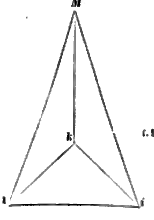

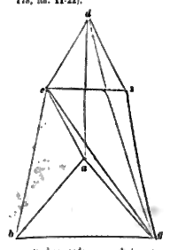

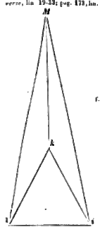
.kit., ita trigonum .kit. ad trigonum .dez.; ergo trigonum .kit. est in proportione media inter trigonum .abg., et trigonum .dez. Eleuetur siquidem super trigonum .kit. cathetus .km. equalis catheto cadenti inter triangulum .daz., et triangulum .abg.; et copulentur recte .mi. et .mt.; et erit altitudo pyramidis .mkit. equalis altitudini pyramidis decurtate .abgdez. De inde protrahantur recte .ae. et .eg. et .dg.; et fient in dicta pyramide decurtata tres pyramides continue proportionales, quarum maior est pyramis .abge., media .agde., minor uero .dgze. Quod sic probatur. Quoniam linee .de. et .ab. equidistantes sunt; et in eis sunt trigona .abe. et .ade., erit altitudo utriusque trianguli una; quare erit sicut .ab. ad .de., ita trigonum .abe. ad trigonum .ade.; ita pyramis .gabe. maior ad pyramidem .gade. mediam. Sunt enim ambe pyramides sub altitudine una, que est a .g. puncto; quia est sub tractus eorum ad planum .dabe.; ergo est sicut .ab. ad .de., ita pyramis .gab. ad pyramidem .gdae. Rursus quia equidistantes sunt recte .ag. ad .dz., ita trigonum .agd. ad trigonum .gdz. Sed sicut trigonum .agd. ad trigonum .gdz., ita pyramis .eagd. media ad pyramidem .edgz. minorem, cum sint sub una altitudine: habent enim caput unum, quod est .e.; et bases eorum sunt in uno plano, scilicet in eo, in quo est quadrilaterum .dagz.; ergo est sicut .ag. ad .dz., ita pyramis .edg. ad pyramidem .edgz. minorem. Sed sicut .ag. ad .dz., ita .ab. ad .de., cum trigona .abg. et .dez. sint equidistantia. Ostensum est etiam et sicut .ab. ad .de., ita pyramis .gab. maior ad pyramidem .gade. mediam; et est etiam sicut .ab. ad .de., hoc est sicut .ag. ad .dz., ita pyramis .gade. media ad pyramidem .gdez. minorem. Quare est sicut pyramis .eabg. ad pyramidem .eagd., ita pyramis .eagd. ad pyramidem .gedz. Quare tota pyramis .abgdez. decurtata diuisa est in tres pyramides continue proportionales, in ea uidelicet, in qua est recta .ab. ad rectam .de.: sed sicut .ab. ad .de., ita fuit triangulus .abg. ad triangulum .kit. Sed sicut triangulus .abg. ad triangulum .kit., ita pyramis .eabg. ad pyramidem .mkit.: sunt enim ambe sub equali altitudine; ergo est sicut .ab. ad .de., ita pyramis .eabg. ad pyramidem .mkit. Demonstratum est etiam sicut .ab. ad .de., ita piramis .eabg. ad pyramidem .gdae.; ergo pyramis .eabg. ad duas piramides, que sunt .mkit. et .gdae., eandem proportionem habent: quare equalis est pyramis .mkit. pyramidi .gade. Quare erit sicut pyramis .gdae. ad pyramidem .gdez., hoc est sicut .ab. ad .de., ita pyramis .mkit. ad pyramidem .gdez.: pyramides ergo .eabg. et .mkit. et .gdez. continue proportionales sunt, et sub equali altitudine, nec non et toti pyramidi .abgdez. equantur. Vnde si ducatur altitudo eorum in bases ipsorum, scilicet in trigona .abg.kit.dez., nimirum triplum ipsorum pyramidum, hoc est totius decurtate pyramidis .abgdez. deueniet; et hoc est quod uolui demonstrare.
Explicatis his que ad areas cubicas pyramidum, et earum partium pertinent.
Nunc tractemus de his que spectant ad mensurationem, et earum partium.
SI infra speram sumatur punctus, a quo quatuor recte sibi inuicem equales ad superficiem spere concurrant: et termini ipsarum non sint in una superficie plana; punctus erit centrum spere. Verbi gratia: sit spera .ab.; et in ipsa sit punctus .z., a quo protracte sint quatuor recte .zb. zg. zd. ze. sibi inuicem equales; et non sint puncta .b.g.d.e. in una superficie plana. Dico, punctum .z. esse centrum spere .ab.
f. 0186 · p. 179
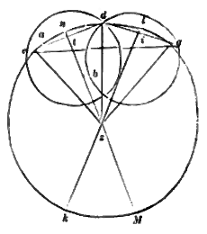

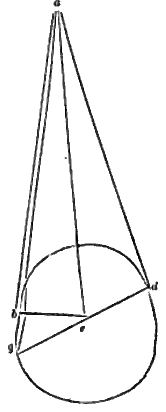
Probatio: protrahantur a puncto .b. in puncta .g.d.e. recte .bg. bd. be.; et copulentur recte .dg. de., et erunt omnes iste recte infra speram. Et quoniam omne trigonum, ut in undecimo habetur EVCLIDIS, est in uno plano, erunt puncta .b.g.d. in uno plano; et puncta .b.d.e. in alio; circa que puncta circinentur circulj .bgd. et .bde.; et a puncto .z. ad plana circulorum .bgd. bde. perpendiculares protrahantur .zi. zt., et emittantur ab utraque parte in puncta .k.l.m.n.; et per punctum recte protrahatur .ib. ig. id. Et quoniam .zi. stat orthogonaliter super planum circuli .b.g.d., erunt siquidem anguli .zib. et .zig. et .zid. recti: et quia recte .zb. zg. zd. sibi inuicem equales sunt; et in comune iacet recta .zi.; erit itaque recte .ib. et .ig. et .id. sibi inuicem. Quare ut in EVCLIDE habetur, .i. punctus centrum est circulj .bgd.: et quoniam .kl. transit per centrum circuli .bgd. orthogonaliter, erit ipsa .kl. dyameter spere; et puncta .k.l. erunt poli circuli .bgd., ut in libro MILES. et TEODOSII probatum est; propter quod in linea .kl. est centrum spere: Similiter ostendetur, punctum .t. esse centrum circulj .bde.; propter quod et linea .mn. probatur esse dyameter spere .ab.; quare in recta .mn. est centrum spere: et quia .z. punctus est in utroque dyametro .kl. et .mn., patet ipsum esse centrum spere, ut predixi.
CVM linea que protrahitur ex puncto capitis omnis pyramidis columne ad centrum basis eius perpendicularis super basim ipsius; tunc linee recte, que protrahuntur ex puncto capitis eius ad circulum continentem superficiem basis eius sunt equales: et multiplicatio unius linearum que protrahuntur ex capite eius ad circulum continentem basim eius in medietatem circuli continentis basi eius est embadum superficiei pyramidis columne, hoc est eius que est inter punctum capitis, et lineam continentem circulum basis. Verbi gratia: esto pyramis columne .abgd., cuius summitas sit .a.; et eius basis sit circulus .bgd., cuius centrum est .e.; et linea .ae. orthogonaliter erecta sit super planum circuli .bgd.; et a puncto .a. ad lineam continentem circulum .bgd. per superficiem pyramidis .abgd. protrahantur quotcumque recte .ab. ag. ad. Dico quidem, rectas .ab. ag. ad. equales esse. Probatio: protrahantur a centro .e. recte .eb. eg. ed.; que omnes sibi inuicem equales sunt a centro. Et quoniam .ae. perpendicularis est super planum circuli .bgd., erunt anguli .aeb. et .aeg. et .aed. recti. Quare orthogonia sunt trigona .aeb. et .aeg. et .aed., et habent bases equales, que sunt .eb. eg. ed.; et latus .ae. est comune eis. Quare latera subtendentia angulos rectos, que sunt .ab. ag. ad. sibi inuicem sunt equalia: et propter hoc est manifestum, quod omnes recte, que protrahi possunt ab .a. ad lineam circumferentem .bgd., equantur linee .ab. Item dico, quod ex ductu .ab. in dimidium linee circumferentis .bgd. prouenit area superficiei pyramidis .abgd., que est a circulo basis .bgd. usque ad summitatem eius: si non fuerit ita, tunc sit multiplicatio linee .ab. in quantitatem longiorem, aut breuiorem medietate circumferentie circuli .bgd. ipsum embadum superficiei pyramidis .abgd.; et sit quantitas .iz.; et duplum .iz. est longius circulo .bgd. Ergo faciam super circulum .bgd. figuram rectilineam habentem latera, et angulos equales continentem ipsum; et sint latera eius aggregata, minus duplo linee .iz., que sit figura .tkl.: et protraham lineas .at. ak. al.; et ostendam, lineam .ab. perpendicularem esse super lineam .bk. hoc modo: protraham lineam .et., et erunt quadrata linearum .eb. et .bt. equalia quadrato linee .et. Comune adiaceat quadratum
f. 0187 · p. 180
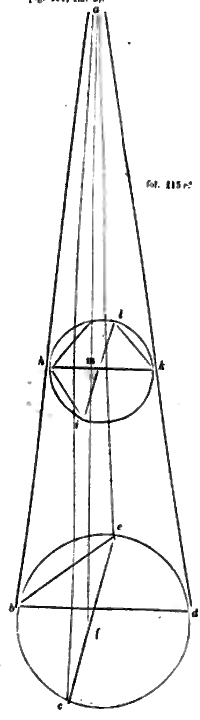

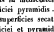
perpendicularis .ae., erunt quadrata linearum .ae. et .et., hoc est quadratum .at. equalia quadratis linearum .ae. eb. bt., hoc est quadratis linearum .ab. et .bt. Quare angulus .abt. rectus est; perpendicularis ergo est .ab. super lineam .tk.:: similiter ostendetur, lineam .ag. perpendicularem esse super .k. akl., et .ad. super lineam .ti.: et quia recte .ab. ag. ad. sibi inuicem equales sunt, ueniet ex multiplicatione unius earum, ut dicatur ex .ab., in medietatem laterum trigoni .tkl. embadum superficiei pyramidis .atkl. maior superficie pyramidis .abgl., cum contineat ipsam, scilicet eius, que est inter circulum .bgd., et punctum .a., cum contineat ipsam: et medietas laterum trigoni .tkl. est minus quantitate .iz.; ergo etiam fuit multiplicatio linee .ab. id quod est minus linea .iz. est maior superficie pyramidis columne; quod est impossibile: ergo non est possibile ut multiplicatio linee .ab. in lineam, que sit longior medietate circulj .bgd., sit embadum superficiei pyramidis .abgd. Rursus ponam lineam .iz. minorem medietate circunferentie circulj .bgd.; et si possibile est, ex ductu .ab. in .iz. proueniat area superficiei pyramidis .abgd.: quod si ita est, sequitur quod ex multiplicatione .ab. in medietatem circunferentie circulj .bgd. proueniet superficies maioris pyramidis pyramide .abgd., que sit pyramis .acfh., cuius summitas sit .a.; et basis eius sit circulus .fch.: et describam in circulo .fch. figuram rectilineam .cfh. minime contingentem circulum .bgd.; et protraham a centro puncto .e. super lineam .cf. cathetum .el., que diuidet lineam .cf. in duo equa; et copulabo rectas .ac. al. af. ah.; et per ea que dicta sunt ostendetur, linea .al. perpendicularis esse super lineam .fc.; et equales debet perpendicularibus cadentibus super rectas .cf. et .fh. a puncto .a.; et erit recta .al. maior quam .ab., cum longior sit .el. quam .eb.; et medietas laterum figure .cfh. est maior medietate linee circunferentis circulj .bgd.; et medietas circulj .bgd. est maior .iz.; et ex ductu .al. in medietatem laterum figure rectilinee .cfh. prouenit area pyramidis .acfh., cuius basis est trigonum .cfh.; et ex ductu .ab. in .iz., que est breuior, ex .al. in .iz., que est breuior medietate laterum trigoni .cfh., prouenit area maioris pyramidis .acfh., cuius basis est circulus .cfh.; quod est inconueniens: suprascripta pyramis .acfh., cuius basis est circulus continens pyramidem .acfh., cuius basis est triangula. Non enim multiplicabitur linea .ab. per longiorem, aut breuiorem lineam circunferentie circulj .bgd., ut proueniat inde area pyramidis .abg. Quare concluditur, quod ex ductu .ab. in medietatem circunferentie circulj .bgd. prouenit area superficiei pyramidis .abgd., que est inter summitatem capitis eius, et circulum .bgd.; et hoc est quod uolui demonstrare. Vnde si ponamus perpendicularem .ae. 24., et semidyametrum .eb. 7., erit utique linea .ab. 25.; quam si duxerimus in medietatem circunferentie circulj .bgd., que est .22., uenient 550 pro area superficiei pyramidis .abgd.
SI superficies secat pyramidem columne ad equidistantem basis ipsius, comunis sectio superficiei et pyramidis erit linea continens circulum, per cuius centrum transibit axis pyramidis, que est linea recta ducta a sumitate pyramidis ad centrum circuli sue basis. Ad quod demonstrandum: Esto pyramis .abcd., cuius summitas est .a., et cuius basis est circulus .bcde., cuius centrum est .f.; et secet ipsam pyramidem superficies .hikl., que sit equidistans circulo .bcde. Dico, comunem sectionem pyramidis .abcd., et superficiei .hikl. circulum esse. Probatio. Signabo super circulum .bcd.
f. 0188 · p. 181
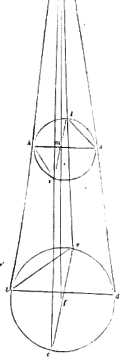
duo puncta .b.c.; et sit arcus .bc. minor semicirculo; et protraham a punctis .b.c. dyametros .bd. ce.; et copulabo rectas .ab. ac. ad. ae. et .be.; et signabo super lineas .ab. et .ac. et .ad. et .ae. super comunem sectionem, quam habent ipse recte cum superficie .hikl. puncta .h.i.k.l.: et quoniam trigona .abd. et .ace. sese inuicem secant super puncta .a.f., comunis eorum sectio erit linea recta, que est linea cadens perpendiculariter ab .a. in .f.; ergo linea .af. est axis pyramidis .abcd., quam secat superficies .hikl. super punctum .m. Rursus quoniam trigona .abd. et .ace. et .abe. secant duas superficies equidistantes .bcde. et .hikl., erunt comunes earum sectiones equidistantes; hoc est recta .hk. equidistat recte .bd., et recta .il. recte .ce., et recta .hi. recte .be.: et quoniam in trigono .abd. protracta est recta .hk. equidistans basi .bd., erit sicut .ab. ad .ah., ita .bd. ad .hk. Est enim sicut .ba. ad .ah., ita .ac. ad .ai.: cum in triangulo .abe. equidistans basi .be. protracta sit linea .hi.; et est sicut .ac. ad .ai., ita .ce. ad .il.; ergo erit sicut .ab. ad .ah., ita .ce. ad .il. Est enim ut .ab. ad .ah., ita .bd. ad .hk.: per equale ergo erit sicut .bd. ad .hk., ita .ce. ad .il.: permutatim ergo ut .bd. ad .ce., ita .hk. ad .il.: est enim .bd. equalis .ce.; quare recta .hk. equalis est recte .il.: et quoniam in trigonis .afb. et .afc. et .afd. et .afe. protracte sunt recte .hm. im. km. lm. equidistantes suis basibus .bf. cf. df. ef., erit sicut .bf. ad .fa., ita .hm. ad .ma.; et sicut .cf. ad .fa., ita .im. ad .ma.; nec non et sicut .df. ad .fa., ita .km. ad .ma.; et sicut .ef. ad .fa., ita .lm. ad .ma. Sed proportio linearum .bf. cf. df. ef. ad .fa. est proportio una; cum ipse quatuor recte sibi inuicem equantur. Sunt enim omnes a centro, et circulj omnes deducte. Quare proportio rectarum .hm. im. km. lm. ad .ma. est similiter proportio una: propter quod patet, ipsas sibi inuicem equales esse; et ducuntur a puncto .m. ad comunem sectionem superficiei .hikl., et pyramidis .abcd. Quare manifestum est, superficiem .hikl. circulum esse: et eius centrum est .m., per quod centrum transit axis .af.; et hoc est quod uolui demonstrare.
IN omni portione pyramidis columne, cuius basis est circulus, et cuius superius est circulus, et cuius basis superficies equidistat superficiei superioris eius; et linea que egreditur ex centro basis eius ad centrum superficiei superioris eius est perpendicularis super duas superficies; tunc si protrahantur in basi eius, et in circulo, quod est in superiore eius, due dyametri equidistantes; et continuatur quod est inter duas extremitates duarum dyametrorum per duas lineas, erit multiplicatio unius earum in medietatem circunferentie amborum circulorum, area superficiei, que continetur inter utrumque circulum. Verbi gratia: Sit pyramis columne decurtata .abgdz., cuius basis sit circulus .abg., et eius caput sit circulus .dez.; qui circulj sibi inuicem equidistant: et copulata in centris eorum recta .it. perpendicularis utrique circulo: et producantur duo dyametri .bg. et .ez. sibi inuicem equidistantes: et copulentur extremitates eorum cum lineis .be. et .gz. Dico quod ex multiplicatione unius linearum .be. gz. in medietatem circunferentie circulorum .abg. dez. prouenit area superficiei, que est inter circulum .abg., et circulum .dez. Quod sic probatur. Compleatur pyramis .mabg.; et protrahantur recte .be. gz. in punctum .m., et erunt recte .mb. et .mg. equales sibi inuicem: nec non et recte .me. et .mz. sibi inuicem equantur. Quare recta .be. recte .gz. equalis est. Et quoniam omnis circulus addit super suum dyametrum
f. 0189 · p. 182
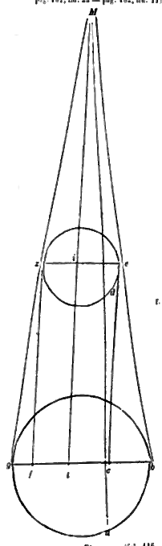
triplum eius, et septimam, erit sicut circulus .abg. ad suum dyametrum .bg., ita circulus .dez. ad suum dyametrum .ez.: et propter hoc erit sicut arcus .bag., qui est medietas circulj .abg. ad dyametrum .bg., ita arcus .edz., qui est medietas circulj .dez. ad dyametrum .ez.: permutatim ergo est arcus .bag. ad arcum .edz., sicut .bg. ad .ez. Sed sicut .bg. ad .ez., ita .mb. ad .me., cum in triangulo .mbg. recta .ez. equidistans sit basi .bg.: abscidam quidem ex arcu .bag. arcum .ag. equalem arcui .edz.; et erit proportio arcus .bag. ad arcum .ag., sicut recta .mb. ad rectam .me.: quare disiunctim erit arcus .ba. ad arcum .ag., sicut recta .be. ad rectam .em. Ergo multiplicatio .me. in arcum .ba. est sicut multiplicatio .be. in arcum .ag., hoc est in arcum .edz. Comuniter si addatur multiplicatio .be. in arcum .bag., erunt multiplicationes .be. in arcum .bag., et .be. in arcum .edz. equales multiplicationibus .be. in arcum .bag., et .em. in arcum .ba.: comuniter addatur multiplicatio .em. in .ag., hoc est ex .em. in arcum .edz., erit multiplicatio totius .mb. in arcum .bag. equalis multiplicationibus .be. in arcus .bag. et .edz., et ex .em. in urcum .edz. Sed multiplicatio .mb. in arcum .bag. est area superficiei pyramidis .mabg., que est inter circulum .abg., et punctum .m.; ergo multiplicatio .be. in arcus .bag. et .edz. cum multiplicatione .em. in arcum .edz. facit eandem aream. Sed ex multiplicatione .me. in arcum .edz. prouenit area pyramidis .medz., que est inter circulum .dez., et punctum .m. Quare residuum aree pyramidis .abcd., quod est inter circulos .abg. et .dez., prouenit ex .be. in arcus .bag. et .edz. qui arcus sunt medietas circunferentie utriusque circulj; et hoc uolui demonstrare. Et ut probentur cum numeris; ponam dyametrum .bg. 14., et dyametrum .ez. duas quintas eius, que sunt 3/5 5.; et lineam .be. 15, et .it. 2/5 14.; et copulabo rectam .mi.; et per puncta .e.z. protraham lineas .ec.zf. equidistantes recte .it.; et erunt recte .ct. et .tf. equales, sicut sunt (sic) .ei. et .iz.; relique .bc. et .gf. sibi inuicem equantur. Quare trigona .ecb. et .zfg. similia sunt sibi inuicem et equalia: et anguli qui ad .b. et .g. equales sibi inuicem sunt: ergo trigonum .mbg. equicrurium est habens latera .bm. et .mg. equalia: et quia recta .ez. equidistat recte .bg., erit trigonum .mez. simile trigono .mbg.; ergo trigonum .mez. equicrurium est habens angulos qui ad .e. et .z. equales. Quare recta .mi. cathetus erit super .ez., cum punctus .i. sit super dimidium .ez.: fuit autem angulus .tib. rectus; quare patet, lineam .mit. esse continuatam; ergo .mt. est perpendicularis pyramidis .mbag., et transit per centrum circuli .edz.: et quoniam recte .mb. et .mg. sunt equales; si ab ipsis auferatur .me. et .mz., remanebunt .eb. et .zg. sibi inuicem equales: ergo .zg. est .15.: et quia .ez. ad .bg. est sicut .2. ad .5., est propter hoc .me. ad .mb. sicut .2. ad .5.; quare .me. ex .eb. est 2/3, scilicet .10.: tota ergo .mb. erit .25.: de cuius quadrato si auferatur quadratum ex .tb., quod est .49., remanebunt .576. pro quadrato catheti .mt.; et erit arcus .bag. 22., que proueniunt ex .tb. ducta in 1/7 3.; et erit arcus .edz. 4/5 8., scilicet 2/5 ex arcu .bag.: quibus arcubus in unum coniunctis faciunt 4/5 30.; quibus multiplicatis in lineam .eb., scilicet in 15. faciunt .462. pro area superficiei contente inter circulos .abg. et .dez. Et si ex area superficiei pyramidis .mabg., que prouenit ex .mb. in arcu .bag., scilicet de .25. in .22. tollatur area superficiei pyramidis .mez., que prouenit ex .me. in arcu .dz., scilicet de .10. in 4/5 8., remanebunt similiter .462. pro area contenta inter circulum .edz. et circulum .bag.; et hoc uolui declarare.
f. 0190 · p. 183
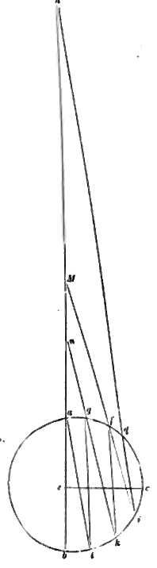
CVM fuerit circulus, cuius dyameter sit protracta, et protrahitur ex centro ipsius linea stans super dyametrum orthogonaliter: et perueniens ad lineam continentem ipsum; et secatur una duarum medietatum circulj in duo media; tunc cum diuiditur una harum quartarum in diuisiones equales quecumque sint; deinde protrahitur corda sectionis, cuius una extremitas est punctus, super quod secat se linea recta stans super dyametrum, et linea continens circulum: et producitur linea dyametri in parte, in quam concurrere, donec concurrant; et protrahuntur in circulo corde equidistantes linee dyametri ex omnibus punctis diuisionum, per quas diuisa est quarta circulj; tunc linea recta, que est inter punctum, super quod est concursus duarum linearum protractarum; et inter centrum circulj est equalis medietati dyametri, et cordis, que protracte sunt in circulo equidistantibus dyametro coniunctis. Verbi gratia: In circulo quidem .abcd. protracta sit dyameter .ab.; et centrum circulj sit .e., a quo protracta sit linea .ec. stans orthogonaliter super dyametrum .ab., que diuidit arcum .acb. in duo equa; et diuidatur arcus .cda. in quotlibet diuisiones equales, que sint arcus .cd. df. fg. ga.; et protrahatur corda .cd., et emittatur extra circulum pariter cum dyametro .ba., donec concurrant in puncto .h.; et per puncta .d.f.g. protrahantur recte .di. fk. gl. equidistantes dyametro .ab. Dico, lineam .he. equalem esse dyametro .ea., et cordis .gl. fk. di. coniunctis. Probatio. Copulabo rectas .al. gk. fi.; et ducam rectas .if. kg. in partes .f.g., donec concurrant linee .ah. super puncta .m.n. Et quoniam in equidistantibus .ab. et .gl. recta incidit .al., erunt anguli .bal. et .alg. equales: equales uero anguli super equas periferias consistunt, siue ad centrum: siue ad periferiam fuerint constituti. Quare arcus .bl. equalis est arcui .ag. Item quia in equidistantibus .gl. et .fk. recta incidit .gk., erunt anguli .lgk. et .gkf. equales; et ideo arcus .lk. arcui .gf. est equalis. Similiter ostendetur, arcum .ki. arcui .fd. equalem esse. Sunt enim arcus .ag. et .gf. et .fd. sibi inuicem equales. Quare et arcus .bl. et .lk. et .ki. sibi inuicem equales sunt; cum arcus .bl. equalis sit arcui .ag., et .lk. arcui .gf., et .ki. arcui .fd. Quare totus arcus .bi. toti arcui .ad. existit equalis. Reliquus .ic. reliquo .cd. equalis est: et est equalis unicuique arcui .ik. kl. lb. Quare anguli .cdi. et .ifk. et .kgl. et .gab. sibi inuicem sunt equales. Rursus quia in equidistantibus .hb. et .di. recta incidit .ch., erit exterior angulus .cdi. equalis opposito et interiori, qui sub .chb. Similiter ostendetur, angulus .imb. equalis esse exteriori .ifk., nec non et angulus .knb. equalis esse angulo .kgl. Est enim angulus .lab. equalis unicuique predictorum angulorum: ergo anguli .lab. et .knb. et .imb. et .chb. sibi inuicem sunt equales: recte ergo .la. kn. et .im. et .ck. sibi inuicem equidistantes sunt, cum in eis incidat recta .bh. faciens cum ipsis exteriores angulos equales oppositis et interioribus. Et quia recte .la. et .gn. copulant duas rectas equidistantes .na. et .gl., erit .na. equalis recte .gl. Item quia equidistantes .kn. et .fm. copulant duas rectas equidistantes .mn. et .kf., erit propter hoc recta .nm. equalis recte .kf. Rursus quia recte .im. et .dh. copulant equidistantes .mk. et .id., erit .mh. equalis recte .id. Quare tota .ah. equatur rectis .gl. fk. di. coniunctis. Comuniter addatur semidyametrum .ea., erit semidyametrum .ea. cum rectis .lg. kf. id. equalis toti .eh.; et hoc est quod uolui demonstrare.
SI in medietate spere componatur corpus ex quotcumque portionibus pyramidum
f. 0191 · p. 184
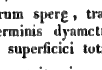

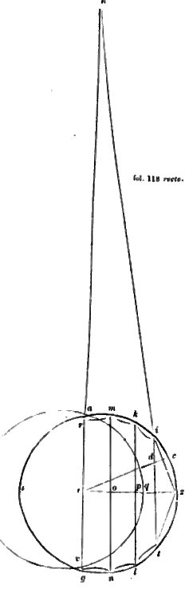
columnarum: et superior harum sit pyramis perfecta habens summitatem eius in alio super polum spere (sic) super polum circulj basis semispere; et circulus basis ipsius sit caput sequentis portionis, cuius basis etiam sit caput sequentis portionis pyramidis; et hoc semper fiat, donec basis inferioris portionis sit circulus maior cadens in spera; et sint omnes circulj portionum equidistantes circulo maiori; et perpendicularis cadens a polo ipsius maioris circuli, scilicet ab eo super quo cadit punctus summitatis superioris portionis ad centrum spere, transeat per centra omnium circulorum: et linee recte cadentes in terminis dyametrorum uniuscuiusque portionis sint sibi inuicem equales. Tunc area superficiei totius corporis compositi ex quacumque multitudine portionum columnarum erit minus duplo aree maioris circulj cadentis in semisfera continentis ipsum corpus: et erit etiam maius duplo aree maioris circulj semispere contente ab ipso corpore. Probatio. Sit circulus maior semispere circulus .abgd., cuius centrum sit .e., quod etiam est centrum spere, quia centrum spere est centrum omnium circulorum magnorum cadentium in spera: et polus circulj .abgd. esto .z.; et transeat circulus magnus per polum .z. stans orthogonaliter super circulum .abgd. Quare comunis sectio eorum erit dyametrum utriusque circulj, que sit recta .ag.; et erit arcus .azg. semicirculus, et equalis semicirculo .abg. Et constituatur in semisfera, cuius basis est circulus .abgd., et polus eius est .z. corpus compositum ex tribus portionibus pyramidum columnarum, et ex una pyramide: et prima portio sit pyramis decurtata, cuius basis est circulus .abgd., et eius caput est circulus; cuius dyametrum est linea .mn.; et linee que protrahuntur a terminis dyametrorum sint .am. et .gn. Secunda uero portio est, cuius basis est circulus, cuius dyameter est recta .mn., et cuius caput est circulus, cuius dyametrum est recta .kl.; et recte cadentes in terminis dyametrorum sint .mk. et .nl.: tertia quidem portionis basis est circulus, cuius dyameter est linea .kl., et eius caput est circulus, cuius dyameter est linea .it.: pyramis quidem columne est, cuius basis est circulus, cuius dyameter est linea .it., et eius sumitas est polus spere: et linee descendentes ab ipso secundum rectitudinem in terminos dyametri basis sint recte .zi. et .zt.; et sint recte .am. mk. ki. iz. sibi inuicem equales. Quare ipsis rectis equales erunt recte .zt. tl. ln. ng., cum bases et capita ipsarum portionum sibi inuicem equidistant: et erunt omnes in una superficie plana, que secat totum corpus in duo media super dyametros portionum, per quam superficiem descendit perpendicularis .ze. transiens per centra omnium circulorum: deinde protrahantur dyametrum .ga., et corda .zi. in punctum .h.; et erit .eh. equalis semidyametro .ea., et dyametris .mn. kl. it. coniunctis: et protrahatur .hz. cathetus .ec., qui cadit super dimidium corde .zi. cum ipso .ec. descendat a centro .e.: et quia in trigono .hez. orthogonio protracta est perpendicularis .ec. super latus subtendens angulum rectum; erit proportio .hz. ad .ze., sicut .ez. ad .zc. Quare multiplicatio .hz. in .zc. est equalis quadrato linee .ez. Sed linea .ez. equalis est semidyametro .ea.; ergo multiplicatio .zh. in .zc. est sicut quadratum semidyametri .ae.: sed ex .zc. dupla est .zi.; quare multiplicatio .hz. in .zi. erit sicut duplum quadrati semidyametri .ae.: quod duplum si ducatur in 1/7 3., reddit duplum aree circulj .abgd.; ergo duplum aree circulj .abgd. prouenit ex multiplicatione .zh. in .zi. ducta in 1/7 3.: maior enim
f. 0192 · p. 185
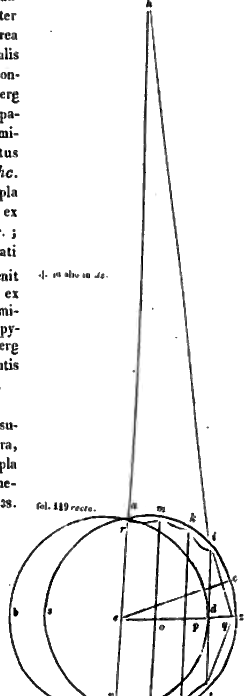

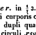
recta .hz. quam .hi. Quare ex ductu .zi. in .he. et in 1/7 3. prouenit minus duplo aree circulj .abgd.: est enim .he. equalis rectis .ae. mn. kl. it. coniunctis: quare ex multiplicatione .zi. in coniunctum rectarum .ae. mn. kl. it. ducta in 1/7 3. prouenit minus duplo aree circulj .abgd.: ex quibus multiplicationibus ostendam prouenire aream superficiei totius compositi corporis: primum quidem area superficiei prime portionis pyramidis columne, cuius basis est circulus .abgd., et eius superior est circulus, cuius dyameter est .mn., prouenit ex multiplicatione semidyametrorum .ae. et .am. in 1/7 3. ducta in .am. he. mzi.; et area superficiei sequentis portionis, cuius basis est circulus dyametri .mn., et eius superior est circulus, cuius dyameter est .kl., prouenit ex 1/7 3. ductis in semidyametros .on. et .pl.; et illud totum in lineam .mk., hoc est in .iz. Similiter area superficiei tertie portionis, cuius basis est circulus dyametri .kl., et eius superior est circulus, cuius dyameter est linea .it., prouenit ex multiplicatione semidyametrorum .pk. et .iq. in .ik., hoc est in .iz. ducta in 1/7 3. Rursus area superficiei perfecte pyramidis, cuius basis est circulus dyametri .it., et eius summitas est .z., prouenit ex .iz. in .iq. ducta in 1/7 3. Ergo area superior totius corporis compositi ex dictis tribus portionibus pyramidum columnarum: et ex una pyramide columne prouenit ex .iz. in lineis .ae. mn. lk. it. coniunctis; et illud totum per 1/7 3, quod demonstratum est esse minus duplo aree circulj .abgd. Similiter si infra hoc quidem corpus cadat in semisfera contingens ipsum, demonstrabitur, area ipsius esse plus duplo aree circulj basis semispere, cuius circulj dyameter erit equalis linee .ec.; et erit arcus semicirculj orthogonaliter eleuati super dyametrum ipsius contingens super dimidium linearum .am. mk. ki. iz.; et polus circulj basis semispere erit super linea .qz.: et propter hoc ponamus lineam .er. equalem linee .ec.: et spatio .er. circinemus circulum .rsu.; et erit recta .rv. dyameter circulj basis semispere. Et quoniam in trigono .hez. ab angulo .hez. recto super latus .bz. cathetus .ec. protracta est, erit sicut .hc. ad .ce., ita .ec. ad .cz.: quare multiplicatio .hc. in .cz. est sicut quadratum .ec., hoc est sicut quadratum .er.: et quia .iz. dupla est ex .cz., erit multiplicatio .hc. in .iz. duplum quadrati semidyametri .er. Sed ex .hc. maior est .he.; quare multiplicatio .he. in .iz. est plus duplo quadrati .er.; ergo multiplicatio .he. in .iz. ducta in 1/7 3. erit plus multiplicatione dupli quadrati semidyametri .er. in 1/7 3. Sed ex multiplicatione .he. in .ic. ducta in 1/7 3. prouenit area superficiei corporis continentis semisperam, ut superius demonstratum est: et ex multiplicatione dupli quadrati .er. in 1/7 3. prouenit duplum aree circulj basis semispere, scilicet circulj .rsv.; ergo superficies, idest corporis compositi ex portionibus pyramidum columnarum continentis semisperam, est maior duplo aree circuli semispere contente ab ipso corpore; et est minor duplo aree circulj semispere continentis ipsum corpus, ut superius demonstratum est; et illud est quod uolui demonstrare.
De embado, et superficie rotunde spere.
Et quia hec que demonstrata sunt, liquida sint et aperta; colligitur quod area superficiei medietatis cuiuscumque spere est dupla aree maioris circulj cadentis in spera, cuius dyameter est dyameter spere. Quare area superficiei totius spere erit quadrupla aree ipsius circulj; que demonstrentur cum numeris. Si superficiei spere, cuius dyameter est .7., aream colligere uis: aream maioris circuli cadentis in ipsa, que est 1/2 38.
f. 0193 · p. 186
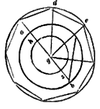

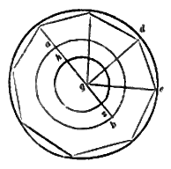
quadruplica; uel quadratum dyametri, quod est 49., per 1/7 3. multiplica, et habetur 154. pro area superficiei ipsius spere: et si medietatem quadrati dyametri per 1/7 3 multiplicaueris, uel duplicaueris aream suprascripti circulj, habebis utique .77. pro area superficiei medietatis spere predicte. Et si 154., que sunt area superficiei totius spere, in sextam dyametri spere, scilicet in 1/6 1.; uel si tertiam partem de 154. in medietatem dyametri, que est 1/2 3., duxeris, habebis 2/3 179., que sunt area magnitudinis totius spere: quia probatum est a sapientibus, quod multiplicatio tertie partis superficiei spere in medietatem totius dyametri facit embadum totius spere. Ad quod etiam demonstrandum adiaceat spera .ab.; et medietas dyametri eius sit linea .ag., et centrum eius sit punctus .g. Dico ergo quod multiplicatio .ag. in tertiam superficiei spere .ab. est equalis embado corporis spere .ab.; cuius hec est demonstratio. Si enim non est multiplicatio .ag. in tertiam superficiei spere .ab. equalis corpori spere, erit tunc equalis corpori spere maioris spera .ab. aut minoris. Sit itaque in primis equalis spere maiori spera .ab.; et sit spera .de., que sit cum spera .ab. super centrum unum; possibile igitur est ut sit spera .de. figura corporis plurium basium, cuius basis sint non contingentes superficiem spere .ab. Quare erit unaqueque perpendicularium, uel cadentium productarum ex centro .g. super superficiem eius maior linea .ag.: si ergo continuentur anguli illius corporis uenientis in spera .de. cum centro spere, prouenient pyramides, quarum omnium capita erit centrum spere, et earum bases erunt bases corporis; et embadum uniuscuiusque pyramidis earum proueniet ex multiplicatione sue perpendicularis in tertiam basis sue. Et propterea quod linea .ag., que est medietas dyametri spere .ab., est minor unaquaque illarum perpendicularium, est uel erit propter illud multiplicatio linee .ag. in tertiam cuiusque basis minor embado pyramidis, cuius basis est illa: ergo multiplicatio linee .ag. in tertiam superficiei illius corporis est minor embado corporis: At superficies illius corporis est maior superficie .ab.; multiplicatio igitur .ag. in tertiam superficiei spere .ab. erit multu minor embado corporis: et iam fuit posita multiplicatio linee .ag. in tertiam superficiei spere .ab. equalis spere .de.; ergo oportet ut sit spera .de. multum minor corpore, quod est intra ipsam; quod est in possibile. Non igitur multiplicatio linee .ag. in tertiam superficiei spere .ab. est maior spera .ab. Et dico iterum quod non erit minor spera .ab. Quod si possibile est, tunc sit; erit ergo equalis spere, que est minor spera .ab., sicut est spera .zh., que sit super centrum .g.: et possibile iterum est ut sit in spera .ba. corpus plurium basium, cuius bases non contingant superficiem spere .zh. Quare erit unaqueque perpendicularium cadentium ex centro spere .ab. super superficies illius corporis minor medietate dyametri spere .ab., que est linea .ag.: erit ergo multiplicatio .ag. in tertiam cuiusque superficiei eorum maior embado pyramidis, cuius basis est illa superficies, et cuius caput est centrum .g.: multiplicatio igitur linee .ag. in tertiam cuiusque superficiei spere .ab. est maior plurimum embado corporis. Iam ante posita fuit equalis embado spere .zh.; ergo spera .zh. est multo maior corpore: et ipsa est inter ipsum; hoc uero impossibile est: non igitur multiplicatio linee .ag., que est medietas dyametri spere .ab., in tertiam superficiei sue est maior corpore eius; ipsa igitur est equalis corpori eius; et id est cuius uolumus declarationem. Et cum hoc declaratum sit; et uolumus habere medietatem alicuius spere,
f. 0194 · p. 187
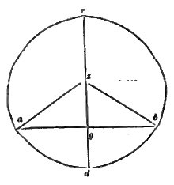
multiplicabimus aream superficiei ipsius in sextam sui dyametri, uel medietatem dyametri eius ducemus in tertiam partem sue superficiei: verbi gratia: sit dyameter date spere .10.; quam si multiplicamus per medietatem eius, uenient .50.; quibus ductis per 1/7 3., uenient 1/7 157., que sunt area superficiei semispere: quam si duxerimus per sextam dyametri, scilicet per 2/3 1.; uel si tertiam de 1/7 157. ducemus in .5., scilicet in medietatem dyametri, habebimus 1/3 6/7 261 pro embado semispere.
ET si oportuerit nos metiri portionem aliquam spere, que sit minor uel maior medietate spere, ut sunt fontes rotundi, et alia quelibet uasa similia; altitudinem ipsius corporis, que est linea, que extenditur a centro circulj oris ipsius ad punctum poli eiusdem circuli, cum semidyametro proportionare curabimus; ipsamque proportionem de superficie semispere, nec non et ex embado ipsius accipere curabimus, et habebimus optatum. Verbi gratia: sit linea .ab. dyameter fontis; et .g. sit centrum eius: et punctus .d. sit polus ipsius circulj. Quare linea .dg. stat orthogonaliter super superficiem circulj, cuius dyameter est .ab.; cumque quadratum medietatis dyametri .ab. diuiserimus per .gd., habebimus illud quod restat de toto dyametro spere super lineam .gd. Verbi gratia: sit dyameter .ab. radix de .160.; quare .gb., que est medietas dyametri .ab., erit radix de .40., cuius quadratum erit .40.: que si diuiserimus per .gd., quam ponamus .4., uenient .10. pro residuo dyametri super lineam .dg.; quod sit linea .ge., et erit tota .de. 14., que est dyameter spere; quam diuidamus in duo equa super .z., et erit .z. centrum circulj magni cadentis in spera; qui circulus sit circulus .aebd.: proportionabo ergo lineam .gd. cum semidyametro .zd., scilicet .4. cum .7., et erit .dg. ex .dz. 4/7: quare accipiam 4/7 ex area superficiei semispere, scilicet de .308., que prouenit ex superficie .dz. in .de. ducta in 1/7 3., uenient .176. pro area superficiei portionis spere, cuius basis est circulus dyametri .ab., et eius polus est .d.; et arcus cadens in ipsa portione ex circulis magnis cadentibus in spera est arcus .adb.; cuius portionis embadum habebitur, si tertia pars aree superficiei ipsius ducatur in .7., scilicet in semidyametrum .zd., et inde auferatur pyramis columne, cuius summitas est punctus .z.; et eius basis erit circulus, cuius dyameter est linea .ab., et eius altitudo est linea .zg., que est .3., et embadum ipsius pyramidis est 5/7 125.; remanent pro embado portionis dicte 285. minus 1/21. Et si aream maioris relique portionis spere, cuius basis est idem circulus: dyameter .ab., et eius altitudo est linea .eg., que sagitta nuncupatur; quam ponamus esse .10., habere uolumus, eodem modo, secundum quod in minori portione operati sumus, erit procedendum. Videlicet quadratum linee .gb., quod est .40., diuidimus per sagittam .ge., et habebimus .4. pro linea .gd., que est sagitta relique portionis spere. Quare tota dyameter spere .ed. erit 14.; in quam si multiplicauerimus sagittam .eg.; et illud totum duxerimus per 1/7 3.; uel si de area superficiei semispere, que est .308., accipiamus 10/7, scilicet proportionem, quam habet sagitta .eg. ad semidyametrum .ez., habebimus 440. pro area huius maioris portionis spere: quam aream, si in sextam dyametri spere: uel si tertiam eius in medietatem dyametri duxerimus, habebimus 2/3 1026; quibus si addiderimus pyramidem columne supradicte, que est 5/7 125, habebimus 2/3 2/7 1152 pro magnitudine ipsius maioris portionis. Et ut hec que dicta sunt geometrice demonstrentur. Adiaceat semisfera .bzd., cuius basis sit circulus .abgd., et eius polus sit punctus
f. 0195 · p. 188
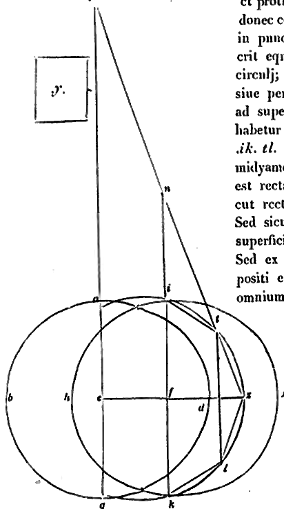

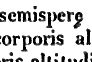

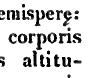
.z.; et signetur super semisfera .bzd. circulus magnus .azg., qui stet orthogonaliter super circulum .abgd.; et comunis eorum sectio .ag. est dyameter utriusque circulj; et descendat a polo .z. per superficiem circulj .azg. perpendicularis .ze. super dyametrum .ag.; et erit .e. punctus centrum utriusque circulj: et diuidatur arcus .az. in quotlibet partes equales, que sint arcus .ai. it. tz.; et per puncta .i.t. equidistantes dyametro .ag. protrahantur corde .ik. tl.; et protrahatur corda .zt. extra circulum in puncto .m.; ad quem punctum proueniat etiam dyameter .ga. Extra circulum protracta: et protrahatur una ex duabus cordis equidistantibus dyametro .ag. extra circulum .azg., donec concurrat linee .mz. Quare si protraxerimus cordam .ki., concurret cum linea .mz. in puncto .n. Et a polo .z. spatio corde, et arcus .zti. circinetur circulus .ihkx., qui erit equidistans circulo .abgd.; et eius centrum erit .f.; et .ik. erit dyameter ipsius circulj; qui circulus abscidit a semisfera .dz. portionem .xzh., cuius portionis sagitta, siue perpendicularis est linea .zf. Dico quidem, portionem superficiei portionis .xzh. ad superficiem semispere .dzb. esse sicut .zf. ad semidyametrum spere .ze. Probatio: habetur quidem ex premissis, lineam .m.e. equalem esse semidyametro .ea. et cordis .ik. tl. coniunctis. Similj quoque modo demonstrabitur, lineam .nf. equalem esse semidyametro .fi. et corde .itl. coniunctis. Et quoniam in triangulo .mez. protracta est recta .nf. equidistans basi .em., erit sicut .zf. ad .ze., ita .nf. ad .me. Sed sicut recta .nf. ad rectam .me., ita superficies .zt. in .nf. ad superficiem .zt. in .me. Sed sicut superficies .zt. in .nf. ad superficiem .zt. in .me., ita est multiplicatio superficiei .zt. in .nf. in 1/7 3. ad multiplicationem de 1/7 3. ad superficiem .zt. in .em. Sed ex multiplicatione .me. in .tz. ducta in 1/7 3. prouenit superficies corporis compositi ex tribus portionibus pyramidis columnarum cadentis infra semisperam, quorum omnium altitudo est linea .ze.; et basis maioris earum est circulus .abgd. Similiter ostendetur quod ex multiplicatione .nf. in .tz. ducta in 1/7 3. prouenit superficies corporis compositi ex duabus portionibus columnarum cadentis in portione spere .hzx. Ergo erit sicut .zf. ad .ze., ita corpus compositum ex duabus portionibus pyramidum columnarum, cuius altitudo est .zf., ad superficiem corporis compositi ex tribus portionibus pyramidum columnarum, cuius altitudo est linea .ze. De inde ponam superficiem .y. ad superficiem semispere .dzb. sicut superficies corporis altitudinis .zf. ad superficiem corporis altitudinis .ze. Quare permutatim erit sicut superficies corporis altitudinis .ze. ad superficiem semispere .dzb., ita superficies corporis altitudinis .zf. ad superficiem .y. Sed superficies corporis, cuius altitudo est .ze., cum est infra semisperam, est minor superficie semispere: et cum ipsum corpus contineat semisperam, est superficies corporis maior superficie semispere: Vnde quando superficies corporis altitudinis .zf. erit minor superficie .y.; et cum fuerit maior: maior. Sed cum superficies corporis altitudinis .ze. est minor superficie semispere .dzb., tunc superficies corporis altitudinis .zf. est similiter minor superficie portionis spere .hzx.; et cum est maior: maior. Et propter hoc superficies .y., et superficies portionis spere ad superficiem corporis, cuius altitudo est .zf., habent unam et eandem portionem: Vnde patet, superficiem portionis spere .hzx. equalem esse superficiei .y.: et quia est sicut superficies corporis altitudinis .ze. ad superficiem semispere .dzb., ita superficies cor
f. 0196 · p. 189
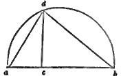

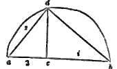

poris altitudinis .zf. ad superficiem .y.: erit propter hoc sicut superficies corporis altitudinis .ze. ad superficiem semispere .dzb., ita superficies corporis altitudinis .zf. ad superficiem portionis spere .hzx.: et cum permutabitur, erit proportio portionis .hzx. ad superficiem semispere .bzd. sicut proportio superficiei corporis altitudinis .zf. ad superficiem corporis altitudinis .ze. Sed proportio horum duorum corporum est sicut linea .nf. ad lineam .me.; et proportio linee .nf. ad lineam .me. est sicut sagitta .zf. ad semidyametrum spere .ze.; ergo proportio superficiei portionis .hzx. ad superficiem semispere .dzb. est sicut .zf., que est altitudo ipsius portionis, ad semidyametrum .ze.; et hoc est quod uolui demonstrare.
De Quinque Corporibus Regularibus in Spera Cuius Dyameter Sit VI¶
Versio Anglica: The Five Regular Polyhedra in Sphere d = 6 (pp. 189–196) · Commentarius: Notae ad Euclidis XIII et Paciolum
SI in spera aliqua construatur cubus et pyramis quatuor basium triangularium et equalium laterum, erit cubus triplus pyramidis. Ad quod demonstrandum adiaceat dyameter date spere .ab., et diuidatur in .c. punctum; et sit .bc. duplum ex .ca.; et circinetur semicirculus .adb.; et a puncto .c. super rectam .ab. ad rectos angulos trahatur recta .cd.; et copulentur recte .bd. et .ad.; et erit recta .ad. latus cubi, et recta .bd. latus trigonorum pyramidis cadentium in spera, cuius dyameter est recta .ab.; et erit propter similitudinem trigonorum .adb. et .dcb. et .dac. quadratum dyametri .ab. triplum quadrati linee .ad., et quadratum linee .bd. quadrati linee .dc., ut EVCLIDES ostendit; nec non et quadratum linee .db. erit duplum quadrati linee .ad.; nec non et proportio quadrati linee .bc. ad quadratum linee .ad. erit sicut .4. ad .3. Verbi gratia: quoniam trigona .dab. et .dac. sibi inuicem sunt similia; et similia trigona circa equales angulos, uel circa eundem angulum latera habent proportionalia; erit sicut .ba. ad .ad., ita .ad. ad .ac.; et quando tres recte continue proportionales sunt, erit sicut prima ad tertiam, ita quadratum linee .ab. ad quadratum linee .ad.. Sed .ba. ex .ac. est tripla; quare quadratum linee .ab. triplum est quadrati linee .ad.. Item quia trigona .adb. et .dcb. similia sunt; erit similiter sicut quadratum linee .ba. ad quadratum linee .ad., ita quadratum linee .bd. ad quadratum linee .dc., cum anguli .dab. et .cdb. sibi inuicem sunt equales. Quare quadratum linee .bd. triplum est quadrati linee .dc.. Item quia recta .dc. in proportione media est inter .bc. et .ca., erit sicut .bc. prima ad .ca. tertiam, ita quadratum linee .bc. ad quadratum linee .cd.: sed sicut .bc. ad .cd., ita .bd. ad .da.. Quare est sicut .bc. ad .ca., ita quadratum linee .bd. ad quadratum linee .da.: est enim .bc. dupla ex .ca.; quare quadratum linee .bd. erit duplum quadrati linee .da., ut superius dictum est. Item proportio quadrati linee .bc. ad quadratum linee .ad. componitur ex proportione quadrati linee .cb. ad quadratum linee .ba., et ex proportione quadrati linee .ba. ad quadratum linee .ad.: est enim .bc. ad .ba. sicut .2. ad .3.: quare quadratum linee .bc. ad quadratum linee .ba. est sicut .4. ad .9.: proportio uero quadrati .ba. ad quadratum .ad. est sicut .9. ad .3., cum quadratum linee .ba. triplum sit quadrati linee .ad.: ergo proportio quadrati linee .bc. ad quadratum linee .ad. componitur ex ea quam habet .4. ad .9., et ex ea quam habet .9. ad .3.: quare patet quod proportio quadrati linee .bc. ad quadratum linee .ad. est sicut .4. ad .3. His itaque omnibus intellectis, ponam lineam .ef. equalem linee .ad.; et costituam super lineam .ef. cubum .efghiklmn.; et ponam lineam .no. equalem linee .cd.; et spatio .no. circinabo circulum .opq., et inscribam in circulo .opq. trigonum
f. 0197 · p. 190

equilaterum .opq.; et protraham .on. in .r., et erit .or. dyameter circuli .opq.; et copulabo rectas .pr. et .qr., et erunt trigona .opr. et .oqr. equalia et similia; quare angulus .por. equalis est angulo .qor.; quare est sicut .po. ad .oq., ita .ps. ad .sq. equalis .po. ex .oq., ergo .ps. equalis est .sq.: communis adiaceat recta .os.; due ergo recte .ps. et .os. duabus .qs. et .os. sunt equales; basis uero .op. basi .oq. iacet equalis: quare trigona .osp. et .osq. sibi inuicem equalia sunt; et angulus .osp. angulo .osq. est equalis: cathetus ergo est .os. super rectam .pq.: et quia quadratum lateris trigoni equilateri cadentis in circulo triplum est quadrati semidyametri sui circuli, erit ergo quadratum linee .op. quadrati semidyametri .on. triplum: est enim .on. equalis recte .dc.; quadrata ergo linearum .op. et .bd. ad equalia eandem habent proportionem; quare .op. equalis est recte .db.: deinde super centro .n. erigam in altum cathetum .nt. equalem recte .bc.; et copulabo rectas .no. np. nq.; et erit unaqueque ipsarum equalis linee .db., hoc est linee .op.: sunt enim quadrata linearum .tn. et .no., uel .tn. et .np., uel .tn. et .nq. equalia quadratis linearum .bc. et .cd.. Quare unumquodque quadratorum linearum .to. tp. tq. equale est quadrato linee .bd.: constituta est igitur pyramis .topq. ex quatuor triangulis equalibus et equilateris, cuius unumquodque latus equale est linee .bd., ut oportet. Dico quidem, cubum .eil. triplum esse pyramidis .topq.; quod sic probatur. Quoniam linea .ps. medietas est recte .op., erit quadratum linee .op. quadruplum quadrati linee .ps.. Sed quadratum linee .op. duplum est quadrati lateris cubi .eil., scilicet lateri .if., cum .op. equalis sit .bd., et .if. recte .da.: quare est sicut .op. ad .if., ita .if. ad .p.s.; quare rectiangula superficies .op. in .ps. equalis est quadrato linee .if., hoc est tetragono .eg.. Quare proportio tetragoni .eg. ad superficiem rectiangulam ex .os. in .sp. est sicut superficies .op. in .ps. ad superficiem .os. in .sp.. Sed proportio superficiei rectiangule .op. in .ps. ad superficiem rectiangulam .os. in .sp., hoc est ad superficiem trianguli .opq., est sicut .op. ad .os.; ergo sicut .op. ad .os., ita tetragonum .eg. ad trigonum .opq.. Quare quadratum tetragoni .eg. ad quadratum trigoni .opq. est sicut quadratum linee .op. ad quadratum linee .os.. Sed proportio quadrati linee .op. ad quadratum linee .os. est sesquitertia. Quia cum de quadrato linee .op. tollitur quadratum linee .ps., quod est quarta eius, remanent tres quarte quadrati linee .op. pro quadrato linee .os.: ergo proportio quadrati linee .op. ad quadratum linee .os. est sicut .4. ad .3.; que proportio dicitur sesquitertia: ergo quadratum tetragoni .eg. ad quadratum trigoni .opq. est sicut .4. ad .3.. Sed sicut .4. est ad .3., ita quadratum linee .cb. ad quadratum linee .ad.: est enim perpendicularis .tn. equalis .cb., et .ei., scilicet altitudo cubi, equalis est recte .ad.: per equale ergo erit sicut .4. ad .3., ita quadratum perpendicularis .tn. ad quadratum altitudinis .ei.: ergo sicut proportio quadrati tetragoni .eg. ad quadratum trigoni .opq., ita quadratum perpendicularis .tn. ad quadratum linee .ei.: per equale ergo erit sicut tetragonum .eg. ad trigonum .opq., ita perpendicularis pyramidis .topq. ad altitudinem cubi .hmk., hoc est .tn. ad .ei.. Quare multiplicatio trigoni .opq. in perpendicularem .tn. est sicut multiplicatio tetragoni .eg. in altitudinem .ei.. Sed ex multiplicatione tetragoni .eg. in altitudinem .ei. prouenit area cubi .kmh.; et ex multiplicatione trigoni .opq. in perpendicularem .tn. prouenit triplum
f. 0198 · p. 191

aree pyramidis .topq.; ergo cubus .eil. constructus in spera, cuius dyameter est .ab., triplum est pyramidis .topq. in eadem spera constructe: et hoc est quod uolui demonstrare. Aliter in cubo .eil. protraham rectas .if. ih. fh. fl. lh. et .il.; et erit in cubo .hmk. constructa pyramis .lhif. quatuor superficierum triangularium et equalium laterum, quorum unumquodque est dyameter unius sex quadratorum continentium cubum. Quare quadratum unius cuiusque ipsorum laterum est duplum quadrilateris cubi; est enim quadratum unius cuiusque lateris pyramidis .topq. duplum quadrati lateris cubi, ut superius ostensum est. Quare latera pyramidis .lhif. equalia sunt lateribus pyramidis .topq.. Vnde patet, pyramidem .lhif. equalem esse pyramidi .topq.: ablata siquidem pyramide .lhif. ex cubo .hmk., remanebunt ex ipso cubo quatuor pyramides sibi inuicem similes et equales; que sunt pyramides .ihef. et .lhgf. et .fikl. et .himl.: est enim basis unius cuiusque duarum primarum pyramidum medietas tetragoni .eg.; et sunt sub equali altitudine, scilicet sub .ei. et .gl.: reliquarum uero duarum pyramidum bases continent tetragonum .km., quod est equale tetragono .eg.; et altitudo ipsarum et una, scilicet altitudo cubi; cum altitudines ipsarum sint .mh. et .kf.: protraham siquidem in cubo lineam .gi.; et quoniam pyramides .ihef. et .lhgf. sibi inuicem equales sunt, erit agregatum ex eis duplum pyramidis .ihef.. Et quoniam tetragonum .eg. duplum est trigoni .hif., erit pyramis .ihefg., cuius basis est tetragonum .eg., duplum pyramidis .ihef., cuius basis est trigonum .hef.: sunt enim ambe sub una altitudine, que est linea .ei.. Quare pyramis .ihefg. equalis est duabus pyramidibus .ihef. et .lhgf.: pyramides uero .ihefg. et .topq. habent bases et altitudines mutue proportionis: est enim sicut tetragonum .eg. ad trigonum .opq., ita altitudo .tn. ad altitudinem .ie.; que uero pyramides habent bases et altitudines mutue proportionis sibi inuicem equales sunt; equalis est ergo pyramis .ihefg. pyramidis .topq.: sunt enim et pyramides .ihef. et .lhgf. equales pyramidi .ihefg.; et que eidem equalia sunt et alterius sunt equalia; pyramides ergo .ihef. et .lhgf. pyramidi .topq. sunt equales. Similiter demonstrabitur, relique due pyramides, que sunt .fikl. et .himl. equales esse pyramidi .topq.: demonstratum est ergo, cubum .kmh. continere quantitatem trium pyramidarum equalium pyramidi .topq.. Vnde patet, cubum .kmh. triplum esse pyramidis .topq.; et hoc uolui demonstrare. Et ut hec liquidius declarescant, ponam dyametrum spere .6., et erit latus cubi, scilicet .ef., radix de .12.; et latus pyramidis, scilicet .op., radix de .24.; et erit quadratum lateris .ef., scilicet tetragonum .eg., 12.: quibus ductis in latitudinem .ei., scilicet in radicem de 12., uenient .12. radices de .12., que sunt una radix de .1728. pro quadrato cubi .hmk.: de quo quadrato si accipiatur nona pars, uenient .192. pro quadrato pyramidis .topq.. Verbi gratia: de quadrato lateris .op. accipiamus quartam, et habebimus .6. pro quadrato linee .ps.: quod si extraxerimus ex quadrato lateris .op., scilicet de .24., remanebunt .18. pro quadrato catheti .os.: quod si multiplicauerimus in quadratum linee .ps., quod est .6., uenient .108. pro quadrato trigoni .opq.: quod si duxerimus in quadratum tertie altitudinis, scilicet in nonum quadrati perpendicularis .tn.; quod quadratum est .16.: uel si nonum de .108., quod est .12., duxerimus per .16., habebimus similiter .192. pro quadrato pyramidis .topq.: quod si duxerimus per .9., habebimus .1728., ut supra, pro quadrato cubi .hmk.; et
f. 0199 · p. 192

hoc uolui demonstrare. Est enim .42. parum plus radicis de .1728.; et .14., que sunt tertia pars de .42., sunt parum plus radicis de .192.; per que ostenditur, cubum esse triplum pyramidis.
SI circa circulum describatur tetragonum, cuius latera omnia contingant circulum; et in contactis copulentur recte, quadrilaterum quod inde prouenerit, tetragonum erit; et exterius tetragonum duplum erit interioris tetragoni. Circa circulum .abcd. adiaceat tetragonum .efgh. contingens circulum in punctis .a. b. c. d., in quibus copulentur recte .ab. bc. cd. ad. Dico quadrilaterum .abcd. tetragonum esse; et exterius tetragonum .eg. duplum esse tetragono .abcd.: summatur centrum circuli .abcd., sitque .i.; et copulentur recte .ia. ib. ic. id.: et quoniam recta .eh. contingit circulum .abcd. in puncto .a.; et in ipso contactu a centro copulata est recta .ia.; recta ergo .ia. cathetus est super rectam .eh., ut in Geometria habetur: rectus est ergo uterque angulorum .iae. et .iah.. Similiter ostendetur, rectos esse angulos .ibe. et .ibf. et .icf. et .icg. et .idg. et .idh.: et quoniam in rectas .be. et .ia. recta incidit .ea.; et sunt anguli qui ad .e., et qui sub .eai. recti; erunt quidem recte .eb. et .ia. equidistantes. Similiter ostendetur, rectas .ib. et .ae. equidistantes esse, cum anguli qui ad .e., et qui sub .ibe. sint recti: ostense sunt etiam et recte .ia. et .ba. equidistantes esse; quare recta .ia. equalis est recte .be., et .ib. recte .ae.. Equilaterum ergo est quadrilaterum .ebia.; dico quidem et orthogonum; est enim unus quisque angulorum, qui sub .ibe. bea. eai. rectus; quare reliquus, qui sub .bia. rectus est. Tetragonum ergo est .ei.. Similiter ostendetur, quadrilatera .fi. gi. hi. tetragona esse. Quare omnes anguli, qui sunt ad .i. centrum, recti sunt: unde patet, rectam .ai. continuari cum recta .ic., et rectam .bi. cum recta .id.; ergo recte .ac. et .bd. dyametri sunt circuli .abcd., et secant se ad rectos angulos. Quare unaqueque rectarum .ab. bc. cd. ad. corda est quarte circuli: equales ergo sunt recte .ab. bc. cd. da. sibi inuicem: equilaterum ergo est quadrilaterum .abcd.; dico etiam et orthogonium: quoniam orthogonium est trigonum .aib., cuius duo latera .ib. et .ia. sunt equalia, cum sint a centro ad periferiam deducta, anguli .iba. et .bai. sibi inuicem sunt equales; et est rectus angulus .bia.: quare semirectus unusquisque angulorum, qui sub .iba. et .iab.. Demonstrabitur etiam per trigona .bic. ida. et .icd. unumquemque angulorum qui sub .ibc. icb. icd. idc. et .ida. et .iad. semirectum esse; quare anguli .abc. et .bcd. et .cda. et .dab. recti sunt: orthogonium ergo est quadrilaterum .abcd.: ostensum est etiam et equilaterum; ergo equilaterum .abcd. tetragonum est. Dico rursus, tetragonum .eg. continens circulum duplum esse tetragono .abcd. continenti a circulo: est enim paralilogramum unumquodque tetragonorum .ie. if. ig. ih.; et dyametri ipsorum, que sunt .ab. bc. cd. da., ea per equalia secant: quare trigonum .aib. equale est trigono .eab.: eodemque modo et trigonum .bic. equale est trigono .fbc., et trigonum .icd. trigono .gcd., nec non et trigonum .aid. trigono .adh.. Quare trigona .aeb. et .bfc. et .cgd. et .ahd. reliquis quatuor trigonis .aib. et .bic. et .cid. et .dia. continentibus totum tetragonum .abcd. equalia sunt. Vnde patet, tetragonum .eg. duplum esse tetragono .abcd.. Aliter quoniam semicirculus est sectio .dab., et in ipso angulus est qui sub .dab.; angulus ergo qui sub .dab. est rectus: et quia latera .ad. et .ab. equalia sunt, erit unusquisque angulorum qui sub .abd. et .adb.
f. 0200 · p. 193
medietas recti: est enim et angulus .iab. semirectus; et est rectus qui sub .aib.: quare trigona .abd. et .abi. sibi inuicem sunt similia: et habent unum angulum comunem, eum uidelicet qui sub .dba.: quare proportionaliter est ut .db. ad .ba., ita .ba. ad .bi.. Quare est sicut prima .db. ad tertiam .bi., ita quadratum quod a prima .db. ad quadratum quod a secunda .ab.: est enim dyametro .db. equale unumquodque laterum tetragoni .efgh.; ergo est sicut .db. ad .bi., ita tetragonum quod a recta .ef. ad tetragonum quod a recta .ab.; est enim .db. ex .bi. dupla; quare et tetragonum quod a recta .ef. duplum eius quod a recta .ab.. Sed tetragonum quod a recta .ef. est tetragonum .efgh.; et tetragonum quod a recta .ab. est tetragonum .abcd.; ergo tetragonum .eg. duplum est tetragoni .abcd.; quod oportebat ostendere.
SI in cubo describatur columna eiusdem altitudinis, et in columna spera, et in spera pyramidis columne duorum capitum, cuius due extremitates sint in centra circulorum basis et capitis columne; et eius uenter sit circulus secans columnam et speram in duo media; et sit ipse circulus equidistans circulis basis et capitis columne: et in ipsa pyramide describatur solidum octobasium triangularium, cuius uenter sit tetragonum cadens in superficie predicti circuli secantis columnam et speram in duo media, cuius tetragoni angulis ad centra columne circulorum basis et capitis ascendentis quatuor recte utrique facientes super ipsum tetragonum octo trigona equilatera et equianguia, quarum unumquodque latus est equale uniuscuiusque lateris ipsius tetragoni; erit proportio horum omnium corporum inter se sicut narro: proportio quidem cubi ad columnam est sicut .14. ad .11.; columne ad speram est sesqualtera; spere ad pyramidem dupla; pyramidis ad solidum octo basium est sicut .11. ad .7. Vnde colligetur, proportionem cubi ad speram esse sicut .21. ad .11.; ad pyramidem sicut .42. ad .11.; ad solidum octo basium sexcuplam: et proportionem columne ad pyramidem esse triplam, et ad solidum octobasium sicut .33. ad .7.; nec non et proportionem spere ad solidum octobasium sicut .22. ad .7. Ad hec autem omnia demonstranda adiaceat tetragonum .abcd.; et in ipso describatur circulus .efgh.; et eius centrum sit .i.; et eleuetur a puncto .i. super superficiem tetragoni .ac. orthogonaliter linea .ik., que sit equalis unicuique laterum tetragoni .ac.; et intelligam, tetragonum .ac. esse unam ex sex superficiebus continentibus cubum: et circulum .efgh. esse basem columne: et altitudinem utriusque corporis esse secundum quantitatem linee .ik.; quare .ik. erit axis columne: et .k. punctus erit centrum circuli capitis columne. Et quia ad habendam magnitudinem cubi oportet ut quadratum .ac. ducatur in altitudinem cubi, scilicet in .ik.; et ad habendam magnitudinem columne oportet ut area circuli .efgk. multiplicetur similiter per .ik.; erit ergo proportio cubi, cuius basis est tetragonum .ac., et altitudo .ik. ad columnam, cuius basis est circulus .efgh., et altitudo .ik. sicut tetragonum .ac. ad circulum .efgh.. Sed proportio tetragoni .ac. ad circulum .efgh. est sicut .14. ad .11., ut superius in inuentione embadi circulorum monstratum est; uel aliter protrahatur a centro .i. semidyameter .if., et erit .if. medietas lateris .ab.; quare quadratum linee .if. quarta est quadrati linee .ab.. Sed ex quadrato linee .ab. prouenit tetragonum .ac.; ergo ex tetragono linee .if. prouenerit quarta tetragoni .ac.: quod quadratum si multiplicetur in 1/7 3, prouenient tres quarte et septimam quarte, hoc est 11/14 tetragoni .ac.; et ex quadrato linee .if. ducto in 1/7 3. prouenit circulus .efgh.; ergo
f. 0201 · p. 194proportio circuli .efgh. ad tetragonum .ac. est sicut .11. ad .14.: conuersim ergo proportio tetragoni ad circulum est sicut .14. ad .11., ut predixi; et proportio ergo cubi ad columnam est sicut .14. ad .11.; et hoc uolui demonstrare.
Rursus intelligam, rectam .ik. esse dyameter spere cadentis in dicta columna; et diuidam .ik. in duo equa super .l.; et intelligam, punctum .l. esse centrum circuli magni cadentis in spera et equalis et equidistantis circulo .efgh.; et erit circulus, cuius centrum est .l., secans colunam in duo media: et quia area superficiei spere est quadruplum ipsius circuli, qui est equalis circulo .efgd.; et ex multiplicatione ipsius superficiei in sextam dyametri spere habetur magnitudo spere, que sit .im.; ergo si circulus .efgh. multiplicetur per quadruplum sexte dyametri spere; quod quadruplum sit linea .in., proueniet utique magnitudo ipsius spere. Sed ex multiplicatione circuli .efgh. in dyametrum spere, scilicet in altitudinem columne, que est .if., prouenit magnitudo columne; ergo quam proportionem habet linea .ik. ad lineam .in. eandem proportionem habet predicta columna ad predictam speram: et quia .ik. est sexcupla ex .im., et .in. est quadrupla eiusdem .im., erit proportio .ik. ad .in. sicut .6. ad .4., hoc est in minimis numeris sicut .3. ad .2.: quare proportio columne ad speram est sicut .3. ad .2.; que proportio sexquialtera nuncupatur: et quia proportio cubi ad columnam est sicut .14. ad .11., erit proportio eorumdem corporum sicut triplum .14. ad triplum de .11., hoc est sicut 42. ad .33.: et quia proportio columne ad speram est sicut .3. ad .2., erit proportio eorumdem sicut undecuplum de .3. ad undecuplum de .2., hoc est sicut .33. ad .22.: et quia proportio cubi ad columnam est sicut .42. ad .33.; et proportio columne ad speram sicut .33. ad .22.; per equale ergo erit sicut .42. ad .22., hoc est sicut .21. ad .11., ita cubus ad speram; et hoc uolui demonstrare. Item intelligam a circulo, cuius centrum est .l. ad utrumque polum spere, scilicet ad puncta .i. k. prouenire singulam pyramidem columne; que pyramides simul composite faciunt pyramidem duorum capitum; et erit altitudo unius pyramidis linea .lk., alterius uero linea .il.; et est ut diximus tota .ik. dyameter spere. Ad habendam istam magnitudinem huius compositi corporis, oportet ut circulus, cuius centrum est .l., multiplicetur in tertiam sue altitudinis, scilicet in tertiam linee .ik.. Sed ex multiplicatione circuli, cuius centrum est .l., in duas tertias dyametri .ik., scilicet in .in., prouenit magnitudo spere; ergo proportio spere ad ipsum corpus duorum capitum est sicut proportio duarum tertiarum dyametri spere ad tertiam eiusdem dyametri: Sed proportio duarum tertiarum cuiusque rei ad tertiam eiusdem rei est dupla: ergo et proportio spere ad pyramidem duorum capitum cadentem in ipsa est dupla: et quia proportio columne ad speram est sicut .3. ad .2.; spere ad pyramidem sicut .2. ad .1., erit proportio columne ad pyramidem tripla; et hoc uolui demonstrare. Rursus circa idem centrum .l. intelligam circulum equalem circulo superiori .efgh.; et in eo intelligam, tetragonum esse descriptum equale tetragono .efgh.; et a punctis angulorum ipsius tetragoni lineabo quatuor lineas ad unum quemque polum spere, scilicet ad puncta .i. k.; et perficietur solidum octo basium, quod EVCLIDES in tertio decimo libro infra speram describere docet: quod solidum diuiditur in duas pyramides super tetragonum descriptum in circulo, cuius centrum .l., quarum unaqueque habet basem tetragonam: et super ipsam eleuantur quatuor trigona equilatera;
f. 0202 · p. 195
et altitudo unius pyramidis est linea .kl., et alterius .il.; que altitudines sibi inuicem sunt equales; est enim unaqueque earum medietas linee .ik., hoc est dyametri spere, uel axis columne, seu altitudinis cubi; quarum pyramidum magnitudines, hoc est magnitudinem totius solidi octobasium habebis ex multiplicatione tetragoni descripti in circulo, cuius centrum est .l., in tertiam partem linee .ik.. Sed magnitudo pyramidis duorum capitum continentis hoc solidum octobasium habetur ex multiplicatione circuli continentis ipsum tetragonum in eandem tertiam partem linee .ik.; ergo proportio pyramidis duorum capitum ad solidum octobasium est sicut circulus ad quadratum descriptum infra ipsum circulum; que proportio est sicut .11. ad .7., cum proportio tetragoni continentis circulum ad ipsum circulum sit sicut .14. ad .11. Et exterius tetragonum interioris sit duplum; ergo proportio pyramidis duorum capitum ad solidum octobasium est sicut .11. ad .7.: fuit etiam proportio cubi ad pyramidem duorum capitum sicut .42. ad .11.; et proportio octaedron sicut .11. ad .7.: quare proportio cubi ad octaedron est sicut .42. ad .7.; que proportio sexcupla est. Rursus quia proportio columne ad pyramidem duorum capitum fuit tripla, hoc est sicut .33. ad .11.; et proportio pyramidis ad octaedron est sicut .11. ad .7.; erit proportio columne ad octaedron, hoc est ad solidum octobasium, sicut .33. ad .7. Item quia proportio spere ad pyramidem duorum capitum fuit dupla, hoc est sicut .22. ad .11.; et proportio pyramidis ad octaedron sicut .11. ad .7., erit proportio spere ad octaedron sicut .22. ad .7.; quam proportionem habet circumferentia cuiuscumque circuli ad suam dyametrum; his itaque demonstratis si magnitudo alicuius horum quinque corporum fuerit nota, erit possibile per ipsam magnitudinem reliquas magnitudines inuenire. Ad cuius rei demonstrationem ponamus latus cubi .ab. esse .6.; quare tetragonum .ac. erit .36.; quod si multiplicetur in altitudinem .ik., que erit similiter .6., uenient .216. pro magnitudine cubi: et hoc est cubicare unum ex lateribus cubi: et quia proportio cubi ad colunam est sicut .14. ad .11., si de .216. acceperimus 11/14, scilicet proportionem, quam habet columna ad cubum, uenient pro magnitudine columne 5/7 169. Similiter si de .216. acceperimus proportiones, quas habent spera: et pyramis duorum capitum, et solidi octobasium ad cubum, nimirum pro magnitudine spere uenient 1/7 113., et pro magnitudine pyramidis 4/7 56., et pro magnitudine solidi octobasium .36. Item sit nota magnitudo columne, que est 5/7 169.; quam si multiplicauerimus per .14., et diuiserimus per .11., uenient .216. pro magnitudine cubi: et si de 5/7 169. acceperimus 2/3, que sunt proportio spere ad columnam, uenient 1/7 113. pro magnitudine spere: et si de 5/7 169. acceperimus tertiam partem, que est proportio pyramidis ad columnam 4/7 56., uenient pro magnitudine pyramidis: item si de 5/7 169 acceperimus 7/33, scilicet proportionem octaedri ad columnam, uenient .36. pro magnitudine octaedri. Eodemque modo poteris operari si magnitudo alicuius reliquorum corporum fuerit nota.
AD inueniendum magnitudinem duodecaedri in spera constructi, cuius spere dyameter sit nota. Ponam penthagonum .abcde., quod sit unum ex duodecim penthagonis equalibus continentibus ipsum solidum: et circa ipsum penthagonum describam circulum .abcde., cuius centrum sit .f.; et protraham in eo dyametrum .ag., nec non et cordam .be., que est corda anguli penthagonici; et ponam centrum spere punctum .h., et copulabo rectam .ah., et circinabo super speram semicirculum magni circuli .ali., et producam .ah. in punctum .i., et erit tota .ai. dyameter spere, nec non et semicirculi .ali.;
Modus Dividendi Lineam Media et Extrema Proportione: Dodecaedrum et Ycosaedrum¶
Versio Anglica: Extreme and Mean Ratio: Dodecahedron & Icosahedron (pp. 196–202) · Commentarius: Notae ad Cordam Auream

et ponamus eam esse ulnarum .6.; et abscidam ab ea lineam .ak., que sit tertia ex .ai.; et producam ad rectos angulos super lineam .ai. lineam .kl., et copulabo rectas .al. et .il.; et ab angulis penthagoni .abcde. ad centrum spere perducam lineas .bh. ch. dh. eh.; et erit pyramis .habcde., cuius basis est penthagonum .abcde., et summitas eius .h. duodecima pars totius solidi duodecim basium penthagonorum descripti in spera, cuius dyameter est .ai.; quia si a centro spere, quod est .h., ad omnes angulos duodecaedri ducantur recte, nimirum in duodecim pyramides equales totum corpus duodecaedri diuidetur, quarum una est pyramis .habcde.: quare si magnitudinem eius inuenerimus, et eius duodecuplum acceperimus, utique habebimus magnitudinem totius corporis. Vnde qualiter operari in his debeamus, indicemus. Primum considerandum est quod trigona .ali. et .alk. sibi inuicem sunt similia: habent enim angulos .a.l.i. et .akl. rectos: et angulum qui ad .a. comunem: reliquis ergo qui sub .alk. reliquo qui ad .i. equalis est: trigona enim similia circa comunem angulum habent latera proportionalia: quare est sicut .ia. ad .al., ita .al. ad .ak.: et quando tres recte proportionales sunt; erit sicut prima ad tertiam, ita quadratum quod a prima ad quadratum quod a secunda: ergo est sicut .ia. ad .ak., ita quadratum dyametri .ai. ad quadratum linee .al..: est enim .ai. ex .ak. tripla; quare et tetragonum ex .ai., quod est .36., triplum est tetragoni linee .al.; ergo tetragonum linee .al. est .12. Et est .al., ut in tertiodecimo libro EVCLIDIS habetur, latus cubi cadentis in spera, cuius dyameter est .ai.. Nam latus cubi cadentis in spera est corda anguli penthagonici unius cuiusque penthagoni duodecim superficierum facientium solidum duodecim basium; ergo quadratum corde .be., que est corda anguli penthagonici .bae., est .12.: et ut inueniamus unum ex lateribus penthagoni .abcde., oportet ut corda .be. media et extrema proportione diuidatur; quia ut in tertiodecimo libro EVCLIDIS habetur corda anguli penthagonici media et extrema proportione diuisa; pars maior est latus penthagonicum.
Modus diuidendi lineam media et extrema proportione.
Nam modus diuidendi cordam .be. media et extrema proportione est ut super quadratum eius, quod est .12., addamus quartam eius, erunt .15.;
f. 0204 · p. 197
de quorum radice auferatur medietas linee .be., que est radix trium, et habebitur pro maiori parte radix de .15. minus radice trium; ergo latus penthagonicum .ae., quod est unum ex lateribus penthagoni, est radix de .15. minus radice trium. Et quia, ut in quartodecimo EVCLIDIS habetur, quadrata corde et lateris penthagonici possunt quincuplum lateris exagonici. Et ut habeam latus exagonicum, addam quadratum corde .be., quod est .12., cum quadrato lateris .ae., quod est .18., minus radice de .180., ut inferius demonstrabo, erunt 30 minus radice de 180.; quorum quinta, que est .6., minus radice de 1/5 7, est quadratum lateris exagonici .af.. Nam exagonicum latus equale est semidyametro circuli; quod quadratum si auferatur ex quadrato semidyametri spere .ah., scilicet de .9., remanebunt .3. et radix de 1/5 7 pro quadrato perpendicularis .hf.. Est enim trigonum .ahf. rectiangulum, cum recta .hf. stet orthogonaliter super planum circuli .abgd.; quia ut habetur in libro MILEI et in ALMAIESTI., cum superficies secat speram, comunis eorum sectio est circulus; et cum a centro spere ad centrum circuli secantis speram linea protrahitur, illa linea stat orthogonaliter super superficiem circuli.
Habita quidem notitia semidyametri .af. et perpendicularis .hf., ostendamus modum mensurandi pyramidem .habcde.. Diuidam primum .fg. in duo equa super .o., et erit .ao. dodrans, hoc est tres quarte dyametri .ag.; et auferam ex corda .be. sextam eius, que sit .bn., remanebit .en. destans, scilicet 5/6 corde .be.: et quia ut in quartodecimo libro habetur, ex dodrante .ao. in destantem .en. peruenit planum penthagoni .abcde.; quod planum si ducatur in perpendicularem .hf., ueniet triplum pyramidis .habcde.; quod etiam triplum si ducatur in .4., habebitur magnitudo totius dodecaedri, cuius duodecima pars est pyramis .habcde.. Sed quia proportio dodrantis .ao. ad semidyametrum .af. est sicut .6. ad .4., que proportio est sexqualtera, erit superficies .af. in .fh. ducta in .en. et producta in .6. sicut superficies ex .ao. in .en. ducta in .hf. et producta in .4.. Item quia proportio .be. ad .en. est sicut .6. ad .5., erit superficies ex .af. in .be. ducta in .fh. et producta in .5. sicut superficies ex .fa. in .en. ducta in .hf. et producta in .6.. Sed ex superficie .fa. in .en. ducta in .fh. et producta in .6. prouenit magnitudo totius duodecaedri; ergo ex superficie .af. in .be. ducta in .hf. et producta in .5. ueniet magnitudo eiusdem duodecaedri: quare ducam primum quadratum ex .af., hoc est .6. minus radice de 1/5 7. in 3, et radicem de 1/5 7., ueniet etiam 4/5 10. et tres radices de 1/5 7.: uerbi gratia: ex ductu .6. in .3. ueniunt .18.; et ex ducta radice de 1/5 7. addita in radicem de 1/5 7. diminutam ueniunt 1/5 7 diminuta; quibus extractis de .18. remanent 4/5 10.: et ex multiplicatione de .3. in radicem de 1/5 7. diminutam ueniunt tres radices de 1/5 7. diminute: et ex multiplicatione de .6. in radicem de 1/5 7. additam ueniunt sex radices de 1/5 7. addite: extractis ergo tribus radicibus diminutis de sex
f. 0205 · p. 198
radicibus additis, remanent tres radices de 1/5 7. addite. Et sic habemus 10 et 4/5 et radices tres de 1/5 7., que sunt una radix de 4/5 64. Post hec ducam quadratum ex .be. in quadratum de .5., uenient .300., in quibus multiplicabo 4/5 10. et radicem de 4/5 64. Nam ex .300. ductis in 4/5 10. ueniunt .3240., et ex ductis .300. in radicem de 4/5 64. uenit radix numeri, qui fit ex quadrato trecentorum, scilicet de .90000. in 4/5 64: de qua multiplicatione proueniunt 5832000.; ergo pro quadrato magnitudinis totius dodecaedri habentur .3240. et radix de 5832000.; et hoc quadratum est binomium primum, cum maius nomen possit plus minore secundum quantitatem quadrati numeri: quare radix eius est binomia, ut in .X.mo EVCLIDIS habetur, que radix est radix de 2700. et radix de 540.; quas radices, si subtiliter acceperimus, habebimus parum minus de ulnis 1/5 75. pro magnitudine positi dodecaedri: uel si radicem de 5832000 quam propius acceperimus, et inueniemus eam esse parum minus de .2415.; quam si super .3240. addiderimus, habebimus parum minus de .5655.; quorum radicem similiter inueniemus esse parum minus de 1/5 75. Et notandum quod diximus, radicem de .3240. et radicem de .5832000. esse radicem de .2700. et radicem de .540., tunc diuisimus .3240. in duas partes, quarum una fuit .2700., et altera .540.; et ex multiplicatione unius earum in aliam prouenit quarta de .5832000.; et ita nos docet EVCLIDES in similibus operari. Demonstrabo rursus quomodo quadratum linee .ae., scilicet lateris penthagoni inueniendum sit. Reiterabo lineam .ae., et addam ei lineam .ra., que sit radix trium: et erit tota .er. radix de .15.; quare .ae. erit radix de 15. minus radice trium; de qua .ae. uolumus quadratum accipere. Quoniam linea .er. diuisa est in duobus utlibet super punctum .a., erunt quadrata linearum .er. et .ar. equalia duplo superficiei .ar. in .er., et quadrato linee .ae.. Vnde si ex quadratis linearum .er. et .ar. tollamus duplum superficiei .ar. in .er., remanebit quadratum linee .ae..: est enim .er. radix de .15.; quare quadratum eius est .15., et .ar. est radix de .3. Quare quadratum eius est .3.; ergo quadrata linearum .er. et .ar. sunt .18.; et ex .ar. in .er., scilicet ex radice trium in radicem de .15. uenerit una radix de .45.: quare ex duplo .ar. in .er. ueniunt due radices de .45.; quibus extractis de .18. inuentis, remanent .18. minus duabus radicibus de .45.; que due radices sunt una radix de .180.; ergo quadratum linee .ae. est .18. minus radice de .180., ut superius inuenimus.
De magnitudine solidi 20 basium triangularium constructi in eadem spera, cuius dyameter sit .6.
AD habendam siquidem magnitudinem ycosaedri constructi in spera data Adiaceat trigonum .abc. equilaterum et equiangulum, quod sit una ex .20. superficiebus continentibus solidum: et circa ipsum describam circulum .abc., et in ipso protraham dyametrum .ad. secans rectam .bc. super punctum .e., et centrum circuli sit .f.; et ponam centrum spere punctum .g., et copulabo rectam .ag., et producam eam in puncto .h., qui sit punctus in superficie spere; et signabo super speram semicirculum circuli magni .aih., et copulabo rectas .bg. cg.; et erit .gabc. pyramis, cuius basis est trigonum .abc., et eius summitas est .g.; que pyramis est 1/20 totius ycosaedri; quia si a puncto
f. 0206 · p. 199
.g., qui est centrum spere, lineentur recte ad omnes angulos .20. triangulorum continentium ipsum ycosaedron, nimirum ipsum in .20. pyramides equales diuidetur, quarum una est pyramis .gabc., cuius magnitudinem si in .20. duxerimus, habebimus utique magnitudinem totius solidi .20. basium: et quia ut in EVCLIDE habetur, circulus continens unum ex trigonis ycosaedri est equalis circulo continenti unum ex penthagonis dodecaedri, cum ambo solida sint in eadem spera constructa; erit propter hoc quod diximus superius, semidyameter circuli .abc. nota; hoc quadratum ex .af. erit .6. minus radice de 1/5 7., et quadratum perpendicularis .gf. erit .3. et radix de 1/5 7. Est enim semidyameter spere .ag. 3., et eius quadratum est .9.: et quia quadratum lateris trianguli equilateri descripti in circulo est triplum quadrati semidyametri ipsius circuli; si triplicauerimus quadratum semidyametri .af., quod est .6. minus radice de 1/5 7., habebimus .18. minus tribus radicibus de 1/5 7. pro una ex lateribus trigoni .abc.: de inde copulabo rectas .db. et .dc., et erunt trigona .abd. et .acd. orthogonia et equalia. Est enim latus .ab. equale lateri .ac.; quare arcus .ab. equalis est arcui .ac.: est enim et totus arcus .abd. toti arcui .acd. equalis: reliquus ergo arcus .bd. reliquo .cd. est equalis; quare recta .bd. recte .cd. est equalis: equilatera enim sunt trigona .abd. et .acd., nec non et equiangula; quare angulus .bad. equalis est angulo .cad.. Est enim et angulus .abc. equalis angulo .acb.; quare anguli qui ad .e. equales sibi inuicem sunt: et si equales, ergo recti. Et quoniam in circulo .abc. dyameter .ad. quandam rectam .bc. ad rectos angulos secat: et per equalia eam secat; ergo recta .be. equalis est recte .ec.; ergo .be. medietas est ex .bc., hoc est ex .ab.; quare quadratum ex .ab. quadruplum est ex quadrato .be.. Sed quadrato linee .ab. equalia sunt quadrata linearum .ae. et .eb.; ergo quadrata linearum .ae. et .eb. quadrupla sunt quadrato linee .eb.. Quare quadratum linee .ae. triplum est quadrato linee .eb.; ergo et quia in trigono orthogonio .abd. ab angulo .b. recto cathetus .ae. protracta est super basem .ad., erit sicut .ae. ad .eb., ita .be. ad .ed.. Quare est sicut quadratum lateris .ae. ad quadratum lateris .eb., ita .ae. ad .ed.. Sed quadratum lateris .ae. ad quadratum lateris .ed. est triplum; et .ae. ergo ex .ed. tripla est. Quare patet .ed. totius dyametri .ad. quartam esse. Est enim et .af. medietas dyametri .ad.; reliqua .ef. est alia quarta pars ex tota .ae. continent tres quartas totius dyametri .ad.. Quare .ae. ad .af. est proportio sexqualtera. Demonstratum est recta .ae. cathetum esse super rectam .bc.. Quare ex ductu .ae. in .bc. prouenit duplum trigoni .abc.; quod si multiplicauerimus per .10., habebimus aream .20. triangulorum equalium continentium solidum .20. basium. Sed quia proportio ex .ae. ad .af. est sicut .15. ad .10., ueniet ex multiplicatione .af. in .bc. ducta in .15. superficies eorumdem .20. triangulorum: quam superficiem si duxerimus in tertiam perpendicularis .gf.; que perpendicularis est altitudo
f. 0207 · p. 200
pyramidarum continentium totum solidum ycosaedri; ergo si multiplicauerimus .af. in .bc.; et illud totum in .5.; et quod prouenerit, duxerimus in .gf., habebimus utique magnitudinem totius solidi: ergo si multiplicauerimus quadratum ex .af. in quadratum ex .bc.; et illud totum duxerimus per quadratum de .5., scilicet per .25.; et hoc totum produxerimus in quadratum ex .gf., habebimus ex hoc toto quadratum magnitudinis solidi. Nam ex multiplicatione quadrati linee .af. in quadratum ex .fg., scilicet ex multiplicatione de .6. minus radice de 1/5 7. in tres et radicem de 1/5 7., uenient 4/5 10. et radix de 4/5 64., ut superius inuenimus; que multiplicanda sunt per quadratum lateris trianguli .bc., scilicet per .18. minus tribus radicibus de 1/5 7., scilicet minus una radice de 4/5 64.; que multiplicatio sic fit: primum multiplicanda sunt 4/5 10 per .18., scilicet integra per integra, ueniunt 2/5 194.; de quibus tollenda est multiplicatio radicis de 4/5 64 addite in radicem de 4/5 64. diminutam; ex qua multiplicatione proueniunt integra 4/5 64., remanent 3/5 129. Item multiplicanda est radix de 4/5 64. addita per 18, ueniunt radices decem et octo de 4/5 64. Et radix de 4/5 64. diminuta multiplicanda est per 4/5 10., ueniunt radices 4/5 10. de 4/5 64. diminute: extractis ergo radicibus 4/5 10. diminutis ex radicibus .18. additis, remanent radices 1/5 7. de 4/5 64.: ergo ex quadrato .af. in .fg. ducto in quadratum ex .bc. ueniunt 3/5 129. et radices 1/5 7. de 4/5 64.: quibus multiplicatis per quadratum de .5., scilicet per .25., ueniunt .3240. et radices .180. de 4/5 64. pro quadrato totius solidi ycosaedri. Nam si illas .180. radices ad radicem unius numeri tantum reducere uolumus: multiplicabimus .180. in se, uenient .32400.; et de 4/5 64. faciemus quintas, erunt quinte .324.; quas multiplicabo per .5., uenient .324.; que multiplicabo per 1/5 de 32400., scilicet per 6480., uenient .2099520.: ergo quadratum totius solidi est .3240. et radix de 2099520.; et hoc est binomium quartum, cum maius nomen, scilicet 3240., sit ratiocinatum, et possit plus minore, scilicet super 2099520., secundum quantitatem numeri non quadrati: unde si radicem de 2099520., que est parum minus de 1449., addiderimus super .3240., uenient parum minus de 4689; quorum radix, que est parum minus de 1/2 68., est quantitas magnitudinis ycosaedri. Et si uolumus ad notitiam semidyametri .af. aliter deuenire. Ponam .kh. quadruplam ex .ak.; et per punctum .k. super dyametrum spere .ah. ad rectos angulos protraham lineam .ki.; et copulabo rectas .ai. ih.; et erit per ea que dicta sunt superius ut .ha. ad .ai., ita .ai. ad .ak.. Quare erit sicut .ha. ad .ak., ita quadratum dyametri .ah. ad quadratum linee .ai.. Est enim .ah. quincupla ex .ak.. Quare quadratum ex .ah., quod est .36., est quincuplum quadrati ex .ai.; ergo quadratum ex .ai. est 1/5 7.; et .a.i. est semidyametrum circuli, cuius penthagoni latus cadentis in ipso circulo est latus trianguli .abc. suprascripti, ut in EVCLIDE habetur: quod latus penthagonicum ita ex semidyametro sui circuli habetur si super quadratum ipsius semidyametri, scilicet super 1/5 7., addemus quartam eius, et erunt .9.; de quorum radice, que est .3., tollam medietatem semidyametri, cuius medietatis quadratum est quarta pars quadrati semidyametri; et illud est 4/5 1.; et habebimus .3.
f. 0208 · p. 201minus radice de 4/5 1.; et hoc est latus dacagonicum: super cuius quadratum, quod est 4/5 10 minus radice de 4/5 64., si addiderimus quadratum semidyametri, scilicet 1/5 7., erunt .18. minus radice de 4/5 64. pro quadrato unius laterum trigoni .abc.; quod quadratum cum sit triplum quadrati semidyametri .af., diuidenda sunt .18., minus radice de 4/5 64., per .3., et uenient .6., minus radice de 1/5 7., pro quadrato semidyametri .af., ut superius inuentum est. Et quia EVCLIDES inuenit esse sicut latus cubi, scilicet corde anguli penthagonici, ad latus trianguli equilateri cadentis in eodem circulo, sicut proportio linee potentis super lineam media et extrema proportione diuisam, et super maiorem partem eius ad lineam potentem super eandem lineam diuisam, et super minorem eius partem; ita solidum .12. basium penthagonorum ad solidum .20. basium triangularium in eadem spera constructarum, est possibile inuenire magnitudinem unius eorum solidorum habita magnitudine alterius. Verbi gratia: inuenimus superius cordam anguli penthagoni fuisse radicem de .12.; et latus trianguli esse radicem de .18. minus radice de 4/5 64. Et solidum .12. basium esse 1/5 75.; ergo sicut radix de .12. est ad radicem de .18. minus radice de 4/5 64., ita 1/5 75. est ad magnitudinem solidi .20. basium. Quare erit sicut .12. ad .18. minus radice de 4/5 64., ita quadratum de 1/5 75., quod inuenimus esse superius .5655., ad quadratum magnitudinis ycosaedri: accipiamus ergo quam subtilius possumus radicem de 4/5 64., et inueniemus eam esse 1/20 8.; et auferamus eam de .18., remanebunt .10. minus 1/20.: ergo est sicut .12. ad .10. minus 1/20, ita .5655. ad quadratum ycosaedri: multiplicabimus ergo .5655. per .10. minus 1/20, erunt .56267.; quibus diuisis per .12. reddunt parum minus de .4689. pro quadrato ycosaedri, ut superius inuenimus. Et si quadratum ycosaedri esset notum, multiplicaremus illud per .12., et summam diuideremus per .10. minus 1/20, et habemus quadratum dodecaedri notum. Et si uolumus inuenire proportionem, quam habet linea potens super lineam media et extrema proportione diuisam ad lineam potentem super eandem lineam diuisam et minorem partem eius. Ponam lineam .ab., et diuidam eam media et extrema proportione super .g.; et maior pars esto .gb.. Quare erit sicut .ab. ad .bg., ita .bg. ad .ga.; et a puncto .g. super rectam .ab. ad rectos angulos ponam rectam .gd.; et ponam ipsam equalem recte .ab.; et copulabo rectas .da. db., et erit recta .db. potens super rectas .dg. et .gb.; et .db. erit potens super rectas .dg. et .ga.: et quia .dg. equalis est recte .ab., erit recta .db. potens super rectas .ab. gb., hoc est super totam lineam diuisam et maiorem partem eius; et linea potens super eandem lineam .ab. et maiorem partem eius, que est linea .ag.; ergo est et sicut .db. ad .da., ita solidum .12. basium ad solidum .20. basium; erit propter hoc et sicut quadratum linee .db. ad quadratum linee .da., ita quadratum dodecaedri ad quadratum ycosaedri: et ut hec ponantur in numeris, ponam .ab. 10.; et erit .bg. radix quincupli quadrati medietatis linee .ab. minus ipsa medietate; ergo .bg. erit de .125. minus 5.; et .ag. erit tripla medietatis .ab. minus radice quincupli quadrati medietatis eiusdem linee; ergo erit .ag. 15. minus radice de .125. Accipiamus ergo quadratum ex .gb.; et erit .150. minus decem radicibus de .125., que sunt una radix de .12500.: et addamus ipsi quadrato quadratum linee .dg., quod est .100., cum linea .dg. sit equalis linee .ab., erunt .250. minus radice de .12500. pro quadrato linee .db.. Item super quadratum linee .ag., quod est
f. 0209 · p. 202.350. minus .30. radicibus de .125. addamus quadratum linee .gd., erunt .450. minus radice de 12500. pro quadrato linee .da.: et quia unumquodque quadratorum linearum .db. et .da. est abscisio aut recisum, ut non habeamus ignotius per ignotum, accipiamus radicem quam subtilius poterimus de .12500. et de 112500.; et auferamus eas de nominibus maioribus, que sunt in ipsis recisis; et erit proportio quadrati linee .db. ad quadratum linee .da. raciocinata. Verbi gratia: radix de 12500. est 4/5 111.; qua extracta de 250., remanet parum minus de 1/5 138. pro quadrato linee .db. Item radix de .112500. est parum plus de 2/5 335.; qua extracta de .450., remanet parum minus de 3/5 114. pro quadrato linee .da.; ergo est sicut 1/5 138. ad 3/5 114., ita quadratum solidi .12. basium ad quadratum solidi .20. basium. Et est hec proportio equalis proportionis supradicte, quam habet quadratum corde anguli penthagonici ad quadratum lateris trigoni cadentis in eodem circulo. Habita siquidem notitia magnitudinum omnium solidorum cadentium in una spera, per ea que dicta sunt, erit possibile inuenire magnitudines similium solidorum cadentium in aliqua alia spera; cum proportio similium solidorum sit proportio triplicata similium laterum: uel etiam dyametrorum sperarum, in quibus ipsa solida fuerint constituta: est enim proportio triplicata dyametri unius spere ad dyametrum alterius ea quam habet cubus dyametri unius spere ad cubum dyametri alterius. Vnde si uolumus inuenire magnitudinem solidi .12. basium cadentis in spera, cuius dyameter sit .7., erit sicut cubus senarij ad cubum septenarij, hoc est sicut .216. ad .343., ita inuentum solidum, cuius magnitudo est 1/5 75., ad magnitudinem quesiti solidi. Quare multiplicanda sunt 1/5 75. per .343., et summa diuidenda est per .216., uenient 9/12 119. parum minus; uel si quadratum de .343. multiplicabitur per quadratum solidi, scilicet per .3240., et radicem de 5832000.; et summa diuidatur per quadratum de .216., et habebitur quadratum solidi .12. basium cadentis in spera, cuius dyameter est .7. Quod idem intelligas de solido .20. basium, et de reliquis solidis.